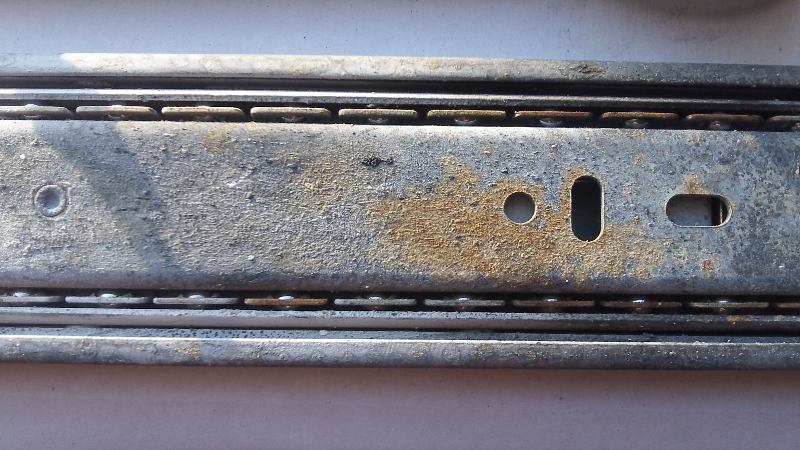

Be sure to cut out the parts listed in CutList tab of the BOM
The assembly process for the Mechanical System requires the ues of two different glues
Wood Glue: Titebond II Premium Wood Glue - This glue forms tight bonds and dries very quickly. It should be used for all assembly steps except initial fin placement. It is particularly well suited to making fillets. Note, transfer this glue to small squeeze bottle for improved application.
Multi-Surface Glue: Loctite Go2 Glue - This glue bonds to a variety of surfaces including metal, used to attach the copper t-connector to the card board Motor Mount
Assembly of the motor mount follows the instructions supplied with the Estes D & E Engine Mount Kit with a few small exceptions which are required to accomodate the t-connector (MM06) used to vent the ejection charge.
Take the mount tube (MM01) and mark one end as the front [where the motor will be inserted] and the other as the rear [where the t-connector (MM06) will be attached]
Test fit the t-connector (MM06) in the mount tube (MM01) by inserting it approximately 1/4" into the mount tube (MM01) and then remove it; the fit will be tight, and may even require a slight stretching of the mount tube (MM01)
Make a mark 1/4" from one end of the red engine block (MM04)
Cut the red engine block (MM04) at the 1/4" line from the previous step, keeping the larger section as the final engine block (see Figure 2) Figure 2 - Modified Engine Block (top) vs Original Engine Block (bottom)
Follow Step 1 in the Estes D & E Engine Mount Kit instructions
Step 1.A - Make a mark on the mount tube (MM01) 1" from the rear, and make another mark 5/8" from the front [this second mark should be offset along the circumference of the mount tube (MM01) slightly]
Step 1.B - Cut a 1/8" wide slit at the mark 1" from the rear of the mount tube (MM01); insert the engine hook (MM05) into the slit (see Figure 3) Figure 3 - Engine hook inserted into mount tube
Step 1.C - Apply wood glue to the outside of engine block (MM06) and the inside of the inside of the rear section of the mount tube (MM01) making sure to completely coat the inside of the mount tube (MM01) up to where the engine hook (MM05) is inserted; Slide the engine block (MM06) into the rear of the mount tube (MM01) until it rests agains the engine hook (MM05); be sure to smooth any excess glue in the mount tube (MM01) to create a smooth water tight surface (see Figure 4) Figure 4 - Engine block inserted into mount tube
Follow Step 2 in the Estes D & E Engine Mount Kit instructions - Apply a bead of wood glue around the mount tube (MM01) just to the rear of the mark 5/8" from the front and then slide the engine retainer ring (MM02) onto the the mount tube (MM01) from the front of the mount tube (MM01) until the engine retainer ring (MM02) is just past the 5/8" mark (see Figure 5) Figure 5 - Engine retainer ring mounted
Allow the assembly to dry overnight
Apply a bead of multi-surface glue to the edge of the base end of the t-connector (MM06)
Insert the t-connector (MM06) into the rear of the mount tube (MM01) (see Figure 6) Figure 6 - Completed motor mount
Drill the four 1/4" through holes for the zip ties (MMB04) (see Figure 7) Figure 7 - MMB01 with zip tie holes highlighted
Drill and counterbore the two 3/32" through holes for the machine screws (see Figure 8) Figure 8 - MMB01 with machine screw holes highlighted
Create the two 1/4" dados on the bottom of the plate (MMB01) to provide space for the zip ties (MMB04); this can be done on a table saw with either a dado blade or with multiple passes using a standard 1/8" wide blade (see Figure 9) Figure 9 - MMB01 with dados highlighted
Clamp the block (MMB02) to the rear edge of the plate (MMB01) (see Figure 10) Figure 10 - Block clamped to plate
Drill pilot holes for the two 1-1/2" drywall screws
Attach the block (MMB02) to the plate (MMB01) using two 1-1/2" drywall screws, making sure to leave approximately 1/8" of the rear screw exposed
Assemble the Test Stand Base; Note: it is significantly easier to assemble the Test Stand Base using the concrete block (TSBa05) as a stand/jig
Place the top (TSBa02) on the concrete block (TSBa05) so that the rear edge is flush with the concrete block (TSBa05)
Place the two sides (TSBa01) along the edge of the concrete block (TSBa05) so the front edges of the sides (TSBa01) are flush with the front of the top (TSBA02)
Clamp the sides (TSBa01) to the top (TSBa02)
Drill pilot holes through the sides (TSBa01) into the top (TSBa02) [3 on each side], and use 2-1/2" dry wall screws (TSBa04) to attach the sides (TSBa01) to the top (TSBa02); be sure to remove the clamps
Place the front (TSBa03) under the top so it rests against the concrete block (TSBa05)
Drill pilot holes through the sides (TSBa01) [1 each side] and the top (TSBa02) [2 holes] into the front (TSBa03), and use 2-1/2" dry wall screws (TSBa04) to attach the front (TSBa03)
Attach the Test Section Beam
Remove the Test Stand Base from the concrete block (TSBa05)
Draw a line down the centerline of the long axis of the top (TSBa02)
Place and clamp the beam (TSBe01) along the line on the top (TSBa02)
Turn the Test Stand Base on its side and drill 3 pilot holes through the top (TSBa02) and into the beam (TSBe01), and use the 2-1/2" dry wall screws (TSBe02) to attach the beam (TSBe01) to the top (TSBa02); be sure to remove the clamps
Prepare the Back Plate
Drill the 3/8" pass-through hole in the back plate (BP01)
Place the Test Stand Base back on the concrete block (TSBa05)
Place the back plate (BP01) against the back of the Test Stand Base [it should fit between the sides and rest against the concrete block (TSBa05) and the beam (TSBe01)]
Drill 2 pilot holes through each side (TSBa01) into the back plate (BP01)
Drill 1 pilot hole through the back plate (BP01) into the beam (TSBe01)
Note: Do not attach the back plate (BP01) yet.
Treat the test stand components with heat resistant paint
In a well ventilated area, lay out all of the wooden components and apply two coats of heat resistent primer (see Figure 12) Figure 12 - Priming Shepard components
Allow primer to dry per manufacture's instructions
Apply two coats of heat resistent paint (see Figure 13) Figure 13 - Painting Shepard components
Allow paint to dry per manufacturer's instructions
Insert the two zip ties (MMB04) into the Motor Mount Bracket (see Figure 14) Figure 14 - Zip tie placement
Use the metal screws (MMB03) to attach the Motor Mount Bracket to the end of the drawer slide (RS01) (see Figure 15) Figure 15 - Motor Mount Bracket attached to Drawer Slide
Use the metal screws (MMB03) to attach the Rail Shield (RS03) to the drawer slide (RS01) next to the Motor Mount Bracket. (not shown)
Attach the drawer slide (RS01) to the beam (TSBe01) using 1-1/2" drywall screws (RS02) (see Figure 16) Figure 16 - Drawer Slide attached to Beam
Place Motor Mount on Motor Mount Bracket and close the zip ties (MMB04) snuggly; note, be sure to have a motor in the motor mount to prevent the zip ties from crushing the Motor Mount (see Figure 17) Figure 17 - Attaching the Motor Mount
Trim the excess portion of the zip ties (MMB04) (see Figure 18) Figure 18 - Trimming zip ties
Place the Back Plate in position and attach it to the Test Stand Base with 2-1/2" drywall screws (BP03) (see Figure 19) Figure 19 - Attaching the Back Plate
Attach the 1-1/2" dry wall screw (BP04) to the Back Plate just above the through hole leaving approximately 1/2" exposed; this screw is used to hang the small pulley (BP02)
Use thin double-sided tape to attach the contact pad (MMB05) to the side of the motor mount block (MMB02) facing the back plate (BP01); note, be sure to align the contact pad with the Force Sensing Resistor mounting specified below
This completes the Mechanical System assembly process.
The only assembly required for the MAX31855 breakout board is to solder the header pins and terminal block onto the board. Once this is done the breakout board can be soldered to the Arduino Protoshield.
The FSR came with male pins, which complicated assembly somewhat. It would be simpler to buy the version of the FSR with a female connector and make your cable fit that configuration. As it was, female D-SUB connectors that were on hand were used to connect the FSR to the CAT 5e cable that was used between the FSR and the ProtoShield. The pins were crimped on to two of the leads of the CAT 5e cable so that the female ends could receive the male pins of the FSR. The reason crimping was used instead of soldering for the pins is that it's very easy to melt the FSR's substrate, thus making the FSR useless, or at least severely altering its operation.
Components were soldered onto the ProtoShield in the configuration shown in the images below. Note that in the bottom view, the ProtoShield has been flipped vertically towards the bottom of the picture. This allows you to orient yourself so that you can follow the traces. For higher resolution images to aid in assembly, check the Shepard_v1.0_DAQ_Assembly_Images.zip file here
Figure 20 - Top View of the ProtoShield
The MAX 31855 breakout board has the correct header pin spacing to fit the holes on the ProtoShield, so it was inserted directly. Note that the capacitor that is included with the K type thermocouple when purchased is being used. The thermocouple's reading had too much noise in it otherwise.
The red and green wires used were breadboard prototyping jumpers from Radio Shack. Left over Ethernet cable wires can be used as well.
The resistor was soldered directly to the ProtoShield, but care should be taken that the leads of the resistor do not short any of the connections on the board.
A 14 pin DIP socket was used for the TLV2374 for multiple reasons including prevention of overheating of the IC during soldering, and ease of replacement in the event of damage due to a wiring mistake.
A smaller screw terminal block for the FSR leads (left side) would have ideal, but the larger block pictured was all that was available at the time of assembly. The pins are spaced more widely on the block and thus the positioning was dictated by the spacing of the holes on the ProtoShield.
Notice that even though the two green jumper wires disappear under the MAX 31855 breakout board in the image, they have been labeled with what pins they go from/to.
Figure 21 - Bottom View of the ProtoShield
If you view the high resolution version of this image from the Shepard_v1.0_DAQ_Assembly_Images.zip file here , you'll notice that several solder bridges have been made to connect different points. Use the schematic diagram found in the Shepard_v1.0_DAQ.zip file here to give you a more complete view of what's being bridged.
The solder bridges are made by laying short lengths of stripped solid wire against the pins (or in the holes) and then soldering them.
Figure 22 labels what the corresponding top side connections are for most of the solder joints.
Figure 22 - Bottom View of ProtoShield With Landmark Connections
The solder positions where the green and white/green wires are coming off the board is the location of the Force Sensing Resistor (FSR) screw terminal.
Be sure to cut out the parts listed in CutList tab of the BOM
The assembly process for the Mechanical System requires the ues of two different glues
Wood Glue: Titebond II Premium Wood Glue - This glue forms tight bonds and dries very quickly. It should be used for all assembly steps except initial fin placement. It is particularly well suited to making fillets. Note, transfer this glue to small squeeze bottle for improved application.
Multi-Surface Glue: Loctite Go2 Glue - This glue bonds to a variety of surfaces including metal, used to attach the copper t-connector to the card board Motor Mount
Assembly of the motor mount follows the instructions supplied with the Estes D & E Engine Mount Kit with a few small exceptions which are required to accomodate the t-connector (MM06) used to vent the ejection charge.
Take the mount tube (MM01) and mark one end as the front [where the motor will be inserted] and the other as the rear [where the t-connector (MM06) will be attached]
Test fit the t-connector (MM06) in the mount tube (MM01) by inserting it approximately 1/4" into the mount tube (MM01) and then remove it; the fit will be tight, and may even require a slight stretching of the mount tube (MM01)
Make a mark 1/4" from one end of the red engine block (MM04)
Cut the red engine block (MM04) at the 1/4" line from the previous step, keeping the larger section as the final engine block (see Figure 2) Figure 2 - Modified Engine Block (top) vs Original Engine Block (bottom)
Follow Step 1 in the Estes D & E Engine Mount Kit instructions
Step 1.A - Make a mark on the mount tube (MM01) 1" from the rear, and make another mark 5/8" from the front [this second mark should be offset along the circumference of the mount tube (MM01) slightly]
Step 1.B - Cut a 1/8" wide slit at the mark 1" from the rear of the mount tube (MM01); insert the engine hook (MM05) into the slit (see Figure 3) Figure 3 - Engine hook inserted into mount tube
Step 1.C - Apply wood glue to the outside of engine block (MM06) and the inside of the inside of the rear section of the mount tube (MM01) making sure to completely coat the inside of the mount tube (MM01) up to where the engine hook (MM05) is inserted; Slide the engine block (MM06) into the rear of the mount tube (MM01) until it rests agains the engine hook (MM05); be sure to smooth any excess glue in the mount tube (MM01) to create a smooth water tight surface (see Figure 4) Figure 4 - Engine block inserted into mount tube
Follow Step 2 in the Estes D & E Engine Mount Kit instructions - Apply a bead of wood glue around the mount tube (MM01) just to the rear of the mark 5/8" from the front and then slide the engine retainer ring (MM02) onto the the mount tube (MM01) from the front of the mount tube (MM01) until the engine retainer ring (MM02) is just past the 5/8" mark (see Figure 5) Figure 5 - Engine retainer ring mounted
Allow the assembly to dry overnight
Apply a bead of multi-surface glue to the edge of the base end of the t-connector (MM06)
Insert the t-connector (MM06) into the rear of the mount tube (MM01) (see Figure 6) Figure 6 - Completed motor mount
Drill the four 1/4" through holes for the zip ties (MMB04) (see Figure 7) Figure 7 - MMB01 with zip tie holes highlighted
Drill and counterbore the two 3/32" through holes for the machine screws (see Figure 8) Figure 8 - MMB01 with machine screw holes highlighted
Create the two 1/4" dados on the bottom of the plate (MMB01) to provide space for the zip ties (MMB04); this can be done on a table saw with either a dado blade or with multiple passes using a standard 1/8" wide blade (see Figure 9) Figure 9 - MMB01 with dados highlighted
Clamp the block (MMB02) to the rear edge of the plate (MMB01) (see Figure 10) Figure 10 - Block clamped to plate
Drill pilot holes for the two 1-1/2" drywall screws
Attach the block (MMB02) to the plate (MMB01) using two 1-1/2" drywall screws, making sure to leave approximately 1/8" of the rear screw exposed
Assemble the Test Stand Base; Note: it is significantly easier to assemble the Test Stand Base using the concrete block (TSBa05) as a stand/jig
Place the top (TSBa02) on the concrete block (TSBa05) so that the rear edge is flush with the concrete block (TSBa05)
Place the two sides (TSBa01) along the edge of the concrete block (TSBa05) so the front edges of the sides (TSBa01) are flush with the front of the top (TSBA02)
Clamp the sides (TSBa01) to the top (TSBa02)
Drill pilot holes through the sides (TSBa01) into the top (TSBa02) [3 on each side], and use 2-1/2" dry wall screws (TSBa04) to attach the sides (TSBa01) to the top (TSBa02); be sure to remove the clamps
Place the front (TSBa03) under the top so it rests against the concrete block (TSBa05)
Drill pilot holes through the sides (TSBa01) [1 each side] and the top (TSBa02) [2 holes] into the front (TSBa03), and use 2-1/2" dry wall screws (TSBa04) to attach the front (TSBa03)
Attach the Test Section Beam
Remove the Test Stand Base from the concrete block (TSBa05)
Draw a line down the centerline of the long axis of the top (TSBa02)
Place and clamp the beam (TSBe01) along the line on the top (TSBa02)
Turn the Test Stand Base on its side and drill 3 pilot holes through the top (TSBa02) and into the beam (TSBe01), and use the 2-1/2" dry wall screws (TSBe02) to attach the beam (TSBe01) to the top (TSBa02); be sure to remove the clamps
Prepare the Back Plate
Drill the 3/8" pass-through hole in the back plate (BP01)
Place the Test Stand Base back on the concrete block (TSBa05)
Place the back plate (BP01) against the back of the Test Stand Base [it should fit between the sides and rest against the concrete block (TSBa05) and the beam (TSBe01)]
Drill 2 pilot holes through each side (TSBa01) into the back plate (BP01)
Drill 1 pilot hole through the back plate (BP01) into the beam (TSBe01)
Note: Do not attach the back plate (BP01) yet.
Treat the test stand components with heat resistant paint
In a well ventilated area, lay out all of the wooden components and apply two coats of heat resistent primer (see Figure 12) Figure 12 - Priming Shepard components
Allow primer to dry per manufacture's instructions
Apply two coats of heat resistent paint (see Figure 13) Figure 13 - Painting Shepard components
Allow paint to dry per manufacturer's instructions
Insert the two zip ties (MMB04) into the Motor Mount Bracket (see Figure 14) Figure 14 - Zip tie placement
Use the metal screws (MMB03) to attach the Motor Mount Bracket to the end of the drawer slide (RS01) (see Figure 15) Figure 15 - Motor Mount Bracket attached to Drawer Slide
Attach the drawer slide (RS01) to the beam (TSBe01) using 1-1/2" drywall screws (RS02) (see Figure 16) Figure 16 - Drawer Slide attached to Beam
Place Motor Mount on Motor Mount Bracket and close the zip ties (MMB04) snuggly; note, be sure to have a motor in the motor mount to prevent the zip ties from crushing the Motor Mount (see Figure 17) Figure 17 - Attaching the Motor Mount
Trim the excess portion of the zip ties (MMB04) (see Figure 18) Figure 18 - Trimming zip ties
Place the Back Plate in position and attach it to the Test Stand Base with 2-1/2" drywall screws (BP03) (see Figure 19) Figure 19 - Attaching the Back Plate
Attach the 1-1/2" dry wall screw (BP04) to the Back Plate just above the through hole leaving approximately 1/2" exposed; this screw is used to hang the small pulley (BP02)
Use thin double-sided tape to attach the contact pad (MMB05) to the side of the motor mount block (MMB02) facing the back plate (BP01); note, be sure to align the contact pad with the Force Sensing Resistor mounting specified below
This completes the Mechanical System assembly process.
The only assembly required for the MAX31855 breakout board is to solder the header pins and terminal block onto the board. Once this is done the breakout board can be soldered to the Arduino Protoshield.
The FSR came with male pins, which complicated assembly somewhat. It would be simpler to buy the version of the FSR with a female connector and make your cable fit that configuration. As it was, female D-SUB connectors that were on hand were used to connect the FSR to the CAT 5e cable that was used between the FSR and the ProtoShield. The pins were crimped on to two of the leads of the CAT 5e cable so that the female ends could receive the male pins of the FSR. The reason crimping was used instead of soldering for the pins is that it's very easy to melt the FSR's substrate, thus making the FSR useless, or at least severely altering its operation.
Components were soldered onto the ProtoShield in the configuration shown in the images below. Note that in the bottom view, the ProtoShield has been flipped vertically towards the bottom of the picture. This allows you to orient yourself so that you can follow the traces. For higher resolution images to aid in assembly, check the Shepard_v1.0_DAQ_Assembly_Images.zip file here
Figure 20 - Top View of the ProtoShield
The MAX 31855 breakout board has the correct header pin spacing to fit the holes on the ProtoShield, so it was inserted directly. Note that the capacitor that is included with the K type thermocouple when purchased is being used. The thermocouple's reading had too much noise in it otherwise.
The red and green wires used were breadboard prototyping jumpers from Radio Shack. Left over Ethernet cable wires can be used as well.
The resistor was soldered directly to the ProtoShield, but care should be taken that the leads of the resistor do not short any of the connections on the board.
A 14 pin DIP socket was used for the TLV2374 for multiple reasons including prevention of overheating of the IC during soldering, and ease of replacement in the event of damage due to a wiring mistake.
A smaller screw terminal block for the FSR leads (left side) would have ideal, but the larger block pictured was all that was available at the time of assembly. The pins are spaced more widely on the block and thus the positioning was dictated by the spacing of the holes on the ProtoShield.
Notice that even though the two green jumper wires disappear under the MAX 31855 breakout board in the image, they have been labeled with what pins they go from/to.
Figure 21 - Bottom View of the ProtoShield
If you view the high resolution version of this image from the Shepard_v1.0_DAQ_Assembly_Images.zip file here , you'll notice that several solder bridges have been made to connect different points. Use the schematic diagram found in the Shepard_v1.0_DAQ.zip file here to give you a more complete view of what's being bridged.
The solder bridges are made by laying short lengths of stripped solid wire against the pins (or in the holes) and then soldering them.
Figure 22 labels what the corresponding top side connections are for most of the solder joints.
Figure 22 - Bottom View of ProtoShield With Landmark Connections
The solder positions where the green and white/green wires are coming off the board is the location of the Force Sensing Resistor (FSR) screw terminal.
The budget is $200, firm. If there is a conflict between function and budget, for this iteration, budget should trump. Our goal is not to make the perfect test stand, it is to upgrade the first prototype (v1.0) of the test stand in a way that gives us an upgrade path to v2.0 and beyond. In the process we will continue to learn both about test stands, and about our processes within our distributed design framework. Holding to a firm budget minimizes the amount of time spent trying to make the stand perfect (once you are out of money, you have to wrap up the project, successful or not). Even an "unsuccessful" prototype will teach us important lessons to apply moving forward. This budget does not include "consumables" such as motors, nor tools, but the $200 cost for the stand itself keeps the basic project affordable if standard tools found in Makerspaces can be used. Any manufacturing that has to be hired out to a third party will be taken out of the $200 budget, and should be avoided to keep this project more practical for those same Makerspaces.
The budget is $200, firm. If there is a conflict between function and budget, for this iteration, budget should trump. Our goal is not to make the perfect test stand, it is to make the first prototype of a test stand and see what we can learn from that experience (both about test stands, and about our processes). We can always go back and do another iteration to meet the design requirements if needed. Holding to a firm budget minimizes the amount of time spent trying to make it perfect (once you are out of money, you have to wrap up the project, successful or not). Even a "unsuccessful" prototype will teach us important lessons to apply moving forward. This budget does not include "consumables" such as motors, nor tools, but the $200 cost for the stand itself keeps the basic project affordable if standard tools found in hackerspaces can be used. Any manufacturing that has to be hired out to a third party will be taken out of the $200 budget, and should be avoided to keep this project more practical for those same hackerspaces.
There was no formal review of the v1.1 design since it was a minor incremental upgrade.
There are some design review items, as well as lessons learned about the Mach 30 design process here .
There is some DAQ design review information here on the forums.
A design issue that was brought up about the drawer slide used is here. It was later confirmed that this was actually a problem that surfaces after repeated motor firings.
A couple of areas where the DAQ system fell short of the requirements was brought up in the last post by Jeremy Wright here.
This is a newer document based on this one , and you should refer to that original version if you want to see the revision history.
This document has been relinked to the Design Review document here as part of our versioning system update.
There are some design review items, as well as lessons learned about the Mach 30 design process here .
There is some DAQ design review information here on the forums.
A design issue that was brought up about the drawer slide used is here. It was later confirmed that this was actually a problem that surfaces after repeated motor firings.
A couple of areas where the DAQ system fell short of the requirements was brought up in the last post by Jeremy Wright here.
The Shepard Test Stand design is broken down into two main components. The first is the mechanical system, and the second is the Data Acquisition (DAQ) system. The mechanical system consists of the frame of the test stand, as well as the motor mounting mechanism and mounts for the thrust and temperature sensors. The DAQ system handles the task of collecting the data from the sensors and presenting them to the user in a way that facilitates motor testing.
The Shepard Test Stand v1.0 mechanical system (pictured above) is made up of six key components. They are:
Test Stand Base - The Test Stand Base (Base) is constructed from ripped down 2x10 pine stock, and fits over a 4" x 8" x 16" (nominal) solid concrete block which is available at most hardware stores. The outer dimensions of the Base are 10-7/8" x 21-1/2" x 5-3/16", and its inner dimensions are 7-3/4" x 15-5/8" x 3-1/2". The key dimensions of the base are the inner dimensions (to allow the base to fit over the concrete block during operation) and an open platform of 20" in length to accommodate the Test Section Beam.
Back Plate - The Back Plate is constructed from ripped down 2x10 pine stock. Its function is to provide resistance to the thrust, and a mounting location for the force sensor (on the side facing the motor) and the DAQ electronics (on the side opposite the force sensor). The dimensions of the Back Plate are 7-3/4" x 14" x 1-1/2" (with 8-13/16" sticking up above the base). The key dimensions are the width (to match the top of the Base) and the height (which should be no less than 8" to provide enough space to mount the force sensor and the electronics). Note, there may be one or more holes in the Back Plate to feed wires from the sensors to the DAQ board (or other purposes). In the current version, there is one 3/8" diameter hole drilled through the center of the Back Plate approximately 3-7/8" above the Base to allow a cord from the Motor Mount Bracket to facilitate calibration. After passing through the Back Plate the cord goes over a pulley mounted on the back side of the Back Plate so weights can be hung from the cord to simulate thrust applying force to the force sensor.
Test Section Beam - The Test Section Beam (Beam) is constructed from a 2x4 pine board, and sits vertically on top of the Base, along the center line. It is 20" long (6" longer than the Rail System) to provide room for the Rail System to retract the Motor Mount and Motor Mount Bracket away from the Back Plate for maintenance. The key dimension is its length.
Rail System - The Rail System restricts the motor under test to motion along the initial thrust vector. It is made from a Liberty 14 inch Ball Bearing Drawer Slide (PN D80614C-ZP-W, available at Home Depot). Note, this was the shortest ball bearing drawer guide available at the time of testing. If a shorter drawer guide is found, the overall length of the test stand could be reduced. It is installed along the top of the Beam along the Beam's center line.
Rail Shield (not shown) - Testing of v1.0 showed the Rail System was prone to becoming fouled by the exhaust from the motor under test. To protect the Rail System, a sheet metal guard, or Rail Shield, was added to the v1.1 design. The Rail Shield is a folded sheet piece of sheet metal sized and shaped to completely cover the portion of the Rail System in front of the Motor Mount. It is attached to the test stand with screws (for a small Rail Shield, it is attached to the Rail System; for a large Rail Shield, like the one used by CCSSC, it is attached to the Test Stand Base).
Motor Mount - The Motor Mount is based on an Estes D and E Engine Mount Kit (PN 303159). It is assembled according to the instructions for E size motors with four modifications.
It is assembled without "Centering Rings" (the cardboard rings used to connect the mount to a rocket body)
1/4" is removed from the "Engine Block" to leave room for a 3/4" copper plumbing t-connector to be inserted into the aft end of the mount
A layer of wood glue is spread on the inside of the motor mount at the aft end to seal the surface which will be glued to the t-connector
A 3/4" copper t-connector is glued into the aft end of the motor mount to redirect the ejection charge
Motor Mount Bracket - The Motor Mount Bracket provides a connection between the Motor Mount and the Rail System. It is a 1/2" thick plate with a block on the aft end sized to provide the correct contact area with the force sensor. The current version is constructed from 1/2" sheet of pine plywood (to create the plate) and a pine block cut from a 2x4. The plate's dimensions are 6-1/4" x 1-23/32" x 1/2" (the 1-23/32" dimension is set to fit the selected force sensor). The block is 1-1/2" x 1-7/32" x 1-23/32". The critical dimensions are the overall length of the plate (sufficient to accommodate the block and the Motor Mount) and the area presented at the back of the Motor Mount Bracket (sized for the force sensor). The Motor Mount is attached to the Motor Mount Bracket using 2 plastic zip ties (rated at least 50 lbf), one over the t-connector and the other over the "Engine Retainer Ring" at the front of the Motor Mount. The Motor Mount Bracket has a number of holes drilled into it. Two countersunk holes are used to attach the Motor Mount Bracket to the Rail System. Four straight-through holes are used to allow the zip ties to pass through the Motor Mount Bracket. Finally, two grooves are cut in the bottom of the Motor Mount Bracket to give the zip ties room between the Rail System and the Motor Mount Bracket. Many of these details can be seen in the image below.
Note: All of the wooden components are covered in 2 coats of heat resistant spray on primer and 2 coats of heat resistant paint.
The CAD files for this version of the test stand are located in the Shepard_v1.0_CAD.zip file here and include the following:
Drafts in PDF and SVG formats in the Drafts directory.
An exploded view in PNG and SVG formats in the Images directory.
Files in the Orig_Assemblies directory in the FreeCAD format, including the complete assembly and the exploded assembly.
Files in the Orig_Parts directory in the FreeCAD format, which are the individual part files for the test stand.
STEP versions of the part files stored in the STEP_Files directory, which were used to build the assemblies.
The Templates directory holding two templates that are used with FreeCAD for the drafts/drawings. A4_Landscape_Simple.svg is a blank template that can be used to remove the title block from a drawing. A4_Mach_30_Title_Block.svg is the Mach 30 specific title block used in all the drafts/drawings.
The Shepard Test Stand v1.0 Data Acquisition (DAQ) system (pictured above) is made up of four key components. They are:
Arduino Uno - The Arduino Uno is an open hardware electronics prototyping platform that serves as the base for the test stand's DAQ system.
Arduino Proto Shield - The Arduino Proto Shield is a pre-built shield for the Arduino Uno that allows a developer to easily package their components for the platform. There is a general overview of the components on the test stand's proto shield below.
Force Sensing Resistor (FSR) - The FSR is a variable resistor who's resistance changes as pressure is applied to its contact area. These resistors are very low cost, but have issues with accuracy and drift, among others. For this prototype which used an FSR with male connectors, a custom cable was made using CAT 5 Ethernet cable and D-SUB pins to connect the FSR to the Arduino Uno. UPDATE: The FSR that was selected had an effective measurement range from 0.1 to 10 Newtons, which was too low for the rocket motors being tested since some could generate a peak thrust of nearly 30 Newtons. This was an oversight that ended up being a moot point because of the FSRs other shortcomings.
Type K Thermocouple - The thermocouple has a 1-meter long fiberglass braided cable and can read temperatures of up to 500 C.
MAX31855 Thermocouple Amplifier Breakout Board - Available from Adafruit Industries, this amplifier is designed to work with any K-type themocouple and gives output from -200 C to 1350 C in 0.25 C increments. It uses a SPI data interface with a built-in 14-bit ADC, and requires 70 to 100 ms to do a conversion. UPDATE: This slow conversion time seems to be the biggest factor limiting our overall data collection sample rate to around 15 samples/sec.
0.01uF Capacitor - This capacitor is wired in parallel with the thermocouple and helps smooth out the sampling jitter in noisy environments.
560 Ohm Resistor - This resistor is one side of a voltage divider, with the FSR being the other. This allows us to convert the change in resistance of the FSR to a voltage so that it can be measured by the Arduino Uno.
TLV2374IN Quad 3MHz Op Amp - This TLV2374 is in a DIP package to make it easier to prototype. This IC is used to amplify the voltage from the FSR to a level suitable for the analog inputs of the Arduino Uno.
14 Pin IC Socket - Lying beneath the TLV2374, this is used to make it possible to swap out TLV2374 ICs if one is damaged in prototyping, and also prevents heat from the soldering iron from being transferred directly into the IC during assembly.
The Shepard Test Stand design is broken down into two main components. The first is the mechanical system, and the second is the Data Acquisition (DAQ) system. The mechanical system consists of the frame of the test stand, as well as the motor mounting mechanism and mounts for the thrust and temperature sensors. The DAQ system handles the task of collecting the data from the sensors and presenting them to the user in a way that facilitates motor testing.
The Shepard Test Stand v1.0 mechanical system (pictured above) is made up of six key components. They are:
Test Stand Base - The Test Stand Base (Base) is constructed from ripped down 2x10 pine stock, and fits over a 4" x 8" x 16" (nominal) solid concrete block which is available at most hardware stores. The outer dimensions of the Base are 10-7/8" x 21-1/2" x 5-3/16", and its inner dimensions are 7-3/4" x 15-5/8" x 3-1/2". The key dimensions of the base are the inner dimensions (to allow the base to fit over the concrete block during operation) and an open platform of 20" in length to accommodate the Test Section Beam.
Back Plate - The Back Plate is constructed from ripped down 2x10 pine stock. Its function is to provide resistance to the thrust, and a mounting location for the force sensor (on the side facing the motor) and the DAQ electronics (on the side opposite the force sensor). The dimensions of the Back Plate are 7-3/4" x 14" x 1-1/2" (with 8-13/16" sticking up above the base). The key dimensions are the width (to match the top of the Base) and the height (which should be no less than 8" to provide enough space to mount the force sensor and the electronics). Note, there may be one or more holes in the Back Plate to feed wires from the sensors to the DAQ board (or other purposes). In the current version, there is one 3/8" diameter hole drilled through the center of the Back Plate approximately 3-7/8" above the Base to allow a cord from the Motor Mount Bracket to facilitate calibration. After passing through the Back Plate the cord goes over a pulley mounted on the back side of the Back Plate so weights can be hung from the cord to simulate thrust applying force to the force sensor.
Test Section Beam - The Test Section Beam (Beam) is constructed from a 2x4 pine board, and sits vertically on top of the Base, along the center line. It is 20" long (6" longer than the Rail System) to provide room for the Rail System to retract the Motor Mount and Motor Mount Bracket away from the Back Plate for maintenance. The key dimension is its length.
Rail System - The Rail System restricts the motor under test to motion along the initial thrust vector. It is made from a Liberty 14 inch Ball Bearing Drawer Slide (PN D80614C-ZP-W, available at Home Depot). Note, this was the shortest ball bearing drawer guide available at the time of testing. If a shorter drawer guide is found, the overall length of the test stand could be reduced. It is installed along the top of the Beam along the Beam's center line.
Motor Mount - The Motor Mount is based on an Estes D and E Engine Mount Kit (PN 303159). It is assembled according to the instructions for E size motors with four modifications.
It is assembled without "Centering Rings" (the cardboard rings used to connect the mount to a rocket body)
1/4" is removed from the "Engine Block" to leave room for a 3/4" copper plumbing t-connector to be inserted into the aft end of the mount
A layer of wood glue is spread on the inside of the motor mount at the aft end to seal the surface which will be glued to the t-connector
A 3/4" copper t-connector is glued into the aft end of the motor mount to redirect the ejection charge
Motor Mount Bracket - The Motor Mount Bracket provides a connection between the Motor Mount and the Rail System. It is a 1/2" thick plate with a block on the aft end sized to provide the correct contact area with the force sensor. The current version is constructed from 1/2" sheet of pine plywood (to create the plate) and a pine block cut from a 2x4. The plate's dimensions are 6-1/4" x 1-23/32" x 1/2" (the 1-23/32" dimension is set to fit the selected force sensor). The block is 1-1/2" x 1-7/32" x 1-23/32". The critical dimensions are the overall length of the plate (sufficient to accommodate the block and the Motor Mount) and the area presented at the back of the Motor Mount Bracket (sized for the force sensor). The Motor Mount is attached to the Motor Mount Bracket using 2 plastic zip ties (rated at least 50 lbf), one over the t-connector and the other over the "Engine Retainer Ring" at the front of the Motor Mount. The Motor Mount Bracket has a number of holes drilled into it. Two countersunk holes are used to attach the Motor Mount Bracket to the Rail System. Four straight-through holes are used to allow the zip ties to pass through the Motor Mount Bracket. Finally, two grooves are cut in the bottom of the Motor Mount Bracket to give the zip ties room between the Rail System and the Motor Mount Bracket. Many of these details can be seen in the image below.
Note: All of the wooden components are covered in 2 coats of heat resistant spray on primer and 2 coats of heat resistant paint.
The CAD files for this version of the test stand are located in the Shepard_v1.0_CAD.zip file here and include the following:
Drafts in PDF and SVG formats in the Drafts directory.
An exploded view in PNG and SVG formats in the Images directory.
Files in the Orig_Assemblies directory in the FreeCAD format, including the complete assembly and the exploded assembly.
Files in the Orig_Parts directory in the FreeCAD format, which are the individual part files for the test stand.
STEP versions of the part files stored in the STEP_Files directory, which were used to build the assemblies.
The Templates directory holding two templates that are used with FreeCAD for the drafts/drawings. A4_Landscape_Simple.svg is a blank template that can be used to remove the title block from a drawing. A4_Mach_30_Title_Block.svg is the Mach 30 specific title block used in all the drafts/drawings.
The Shepard Test Stand v1.0 Data Acquisition (DAQ) system (pictured above) is made up of four key components. They are:
Arduino Uno - The Arduino Uno is an open hardware electronics prototyping platform that serves as the base for the test stand's DAQ system.
Arduino Proto Shield - The Arduino Proto Shield is a pre-built shield for the Arduino Uno that allows a developer to easily package their components for the platform. There is a general overview of the components on the test stand's proto shield below.
Force Sensing Resistor (FSR) - The FSR is a variable resistor who's resistance changes as pressure is applied to its contact area. These resistors are very low cost, but have issues with accuracy and drift, among others. For this prototype which used an FSR with male connectors, a custom cable was made using CAT 5 Ethernet cable and D-SUB pins to connect the FSR to the Arduino Uno. UPDATE: The FSR that was selected had an effective measurement range from 0.1 to 10 Newtons, which was too low for the rocket motors being tested since some could generate a peak thrust of nearly 30 Newtons. This was an oversight that ended up being a moot point because of the FSRs other shortcomings.
Type K Thermocouple - The thermocouple has a 1-meter long fiberglass braided cable and can read temperatures of up to 500 C.
MAX31855 Thermocouple Amplifier Breakout Board - Available from Adafruit Industries, this amplifier is designed to work with any K-type themocouple and gives output from -200 C to 1350 C in 0.25 C increments. It uses a SPI data interface with a built-in 14-bit ADC, and requires 70 to 100 ms to do a conversion. UPDATE: This slow conversion time seems to be the biggest factor limiting our overall data collection sample rate to around 15 samples/sec.
0.01uF Capacitor - This capacitor is wired in parallel with the thermocouple and helps smooth out the sampling jitter in noisy environments.
560 Ohm Resistor - This resistor is one side of a voltage divider, with the FSR being the other. This allows us to convert the change in resistance of the FSR to a voltage so that it can be measured by the Arduino Uno.
TLV2374IN Quad 3MHz Op Amp - This TLV2374 is in a DIP package to make it easier to prototype. This IC is used to amplify the voltage from the FSR to a level suitable for the analog inputs of the Arduino Uno.
14 Pin IC Socket - Lying beneath the TLV2374, this is used to make it possible to swap out TLV2374 ICs if one is damaged in prototyping, and also prevents heat from the soldering iron from being transferred directly into the IC during assembly.
According to the project requirements , the following guidelines must be followed when building, operating, and disposing of the test stand and/or its consumables.
STSR 11.1 Disposal of the spent Estes motors should conform to all local, state, and federal guidelines. STSR 11.2 Electronic waste items, including batteries and circuit boards, must also be disposed of according to all local, state, and federal guidelines. STSR 11.3 If the frame of the STS is damaged beyond repair during operation, proper disposal/recycling guidelines must be followed for the materials used in its construction. STSR 11.4 Wherever possible, the STS design should make it as easy as possible to replace components which are consumable or relatively easy to damage.
Furthermore, under the section labeled "Disposal of standard Estes engines" here there are instructions for disposing of Estes motors properly.
This is a newer document based on this one , and you should refer to that original version if you want to see the revision history.
This document has been relinked to the Disposal document here as part of our versioning system update.
According to the project requirements , the following guidelines must be followed when building, operating, and disposing of the test stand and/or its consumables.
STSR 11.1 Disposal of the spent Estes motors should conform to all local, state, and federal guidelines. STSR 11.2 Electronic waste items, including batteries and circuit boards, must also be disposed of according to all local, state, and federal guidelines. STSR 11.3 If the frame of the STS is damaged beyond repair during operation, proper disposal/recycling guidelines must be followed for the materials used in its construction. STSR 11.4 Wherever possible, the STS design should make it as easy as possible to replace components which are consumable or relatively easy to damage.
Furthermore, under the section labeled "Disposal of standard Estes engines" here there are instructions for disposing of Estes motors properly.
There are the problems that have been discovered with the current design.
It has been mentioned that the cut list has some errors in cut lengths, but the incorrect cuts were not documented. However, these errors cause the cuts to be too long, so no material will be wasted during the build process.
The data acquisition (DAQ) system is not capable of sample rates in excess of 15 samples per second. This is due to the fact that the thermocouple amplifier requires 70 to 100 milliseconds to do a temperature conversion (A to D). This is an unacceptably slow sample rate. The target for future iterations up through version 2.x should be a minimum of 200 samples per second.
The contact between the Force Sensing Resistor's (FSR's) backing plate and the motor mount's contact plate is not completely parallel. This causes skewed results with the FSR.
There was a process breakdown among the Shepard team that caused some Shepard v2.0 DAQ features to be mixed into the development logs and wiki for v1.1. The documentation has been cleaned up, but may still contain some v2.0 contamination that was missed.
This is a newer document based on this one , and you should refer to that original version if you want to see the revision history.
This document has been relinked to the Errata document here as part of our versioning system update.
There are a four main problems with the current design that will need to be addressed in future iterations (v1.1+).
The drawer guide that is being used as a linear guide is not properly shielded from motor exhaust particulates, and thus the guide's bearings tend to foul after less than 30 test firings.
The data acquisition system is not capable of sample rates in excess of 15 samples per second. This is due to the fact that the thermocouple amplifier requires 70 to 100 milliseconds to do a temperature conversion (A to D). This is an unacceptably slow sample rate. The target for future iterations up to version 2.0 should be a minimum of 150 samples per second.
The Force Sensing Resistor (FSR) used will not measure forces in excess of 10.0 Newtons. Some of the motors that this stand tests can exert a trust of 25 to 30 Newtons, so this is unacceptable because the full range of thrust cannot be measured.
The contact between the FSR's backing plate and the motor mount's contact plate was not completely parallel in version 1.0. This causes skewed results with the FSR. This should be corrected in future 1.x versions as much as the material (wood) allows.
The Shepard Test Stand is a test stand for Estes rocket motors. It is named after Alan Shepard, America's first astronaut, as it is our first test stand. We anticipate using an Arduino board to provide the physical interface between the data collecting computer and the required sensors. This project is the first in a series of projects to develop the required skills for the practice of safe rocket engine operation, and to develop the capability to measure and record data about a rocket engine's performance. The use of Estes class motors provides a relatively safe environment to learn in before moving to higher powered motors and engines. The ultimate vision is to develop test stands for full scale liquid rocket engines for use in orbital launch systems.
This is a newer document based on this one , and you should refer to that original version if you want to see the revision history.
This document has been relinked to the General Overview document here as part of our versioning system update.
The Shepard Test Stand is a test stand for Estes rocket motors. It is named after Alan Shepard, America's first astronaut, as it is our first test stand. We anticipate using an Arduino board to provide the physical interface between the data collecting computer and the required sensors. This project is the first in a series of projects to develop the required skills for the practice of safe rocket engine operation, and to develop the capability to measure and record data about a rocket engine's performance. The use of Estes class motors provides a relatively safe environment to learn in before moving to higher powered motors and engines. The ultimate vision is to develop test stands for full scale liquid rocket engines for use in orbital launch systems.
Below is a list of questions and proposed answers to help us narrow down the requirements for this project. You can view the original forum discussion here .
This is a newer document based on this one , and you should refer to that original version if you want to see the revision history.
A1. The Shepard Test Stand is the first step toward developing an open source test stand for flight capable rocket engines. It's focus on low power, commercially available amateur rocket motors is intended to provide a safe first experience for both designers (low power and low cost lead to little penalty for failing to meet design goals the first time around) and operators (low power leads to lower cost if accidentally misused during early training). Additionally, as one of Mach 30's earliest open source hardware projects, it will give us practical experience in open source hardware development and managing projects on Open Design Engine (ODE). Finally, we have received interest in performing live demonstrations of the test stand as part of educational and outreach activities, so it is expected the test stand will become an educational and marketing tool.
A2.The Shepard Test Stand is for anyone wanting to learn about measuring the performance of rocket motors. This includes open source spaceflight designers who will design and build future test stands (at Mach 30 or elsewhere), Mach 30 operators who will use future test stands in other Mach 30 projects, students and educators who want to bring rocket engineering into the classroom, and anyone else interested in how rockets are tested. To ensure the Shepard Test Stand will be accessible to the entire user community, including users with no experience in spacecraft engineering, the Shepard Test Stand team has selected a representative user with limited experience in spacecraft engineering and testing hardware. This representative user is a middle school (6th through 8th grade in the U.S.) teacher who does not have the support of an IT department, and who does not have computer expertise beyond how to connect a USB cable and install software, but has the desire to introduce their students to rocket science in a safe and hands-on way.
A3. The final test stand will be used for verification of typical motor performance metrics such as thrust and casing temperature. The thrust metric will be compared against benchmark values provided in the Estes motor documentation . The test stand will then be used as a tool to teach rocket engineering in classrooms, and to do demonstrations at various conferences and educational events (outdoor only).
Provide a stable base on which to test model rocket motors.
Accommodate Estes rocket motor sizes A through E.
Provide the ability to measure motor thrust while keeping an accurate timestamp for each data point.
Provide the ability to measure motor case temperature or flame temperature while keeping an accurage timestamp for each data point.
Allow for the thermal sensor to be moved so it can either measure case temperature or flame temperature. Note, when measuring the case temperature the DAQ will need to collect data for longer than the thrust duration to capture the temperature change in the case after the motor finishes firing.
Keep cleanup and maintenance to a minimum between consecutive test firings.
Have a motor mount which will survive motor failure or be relatively easy to replace in the event of a motor failure.
Be easily set up and torn down for demonstration purposes. Specifically, the setup and tear down procedures should be tool-less, or at a maximum require simple tools such as screwdriver and/or hammer rather than something like a masonry drill bit.
Be easy to package for shipment to any event at which it will be used. Be particularly aware of dimensions and weight and how they impact shipping costs. Note, CCSSC intends to use up to 10 test stands at a time, so transportation considerations should also take into account transporting multiple test stands.
These features will not necessarily make it into any version of Shepard, but should be kept in mind for any of its larger sibling test stands later on.
High and low speed video capture of the tests from multiple angles.
Integrated ignition system so the test management software can control the entire test.
Additional measurements.
Higher resolution measurements.
Higher sample rates.
Accommodation of:
High power commercial solid motors.
Small hybrid motors (on the thrust scale of high power commercial solid motors).
A7.The designs will be open so that anyone, without necessarily a technical education in rocketry, propulsion, or engineering, would be able to build and operate a Shepard Test Stand. Specifically, in order to support the use of the Shepard Test Stand in classrooms, teachers and students should be able to build the test stand from parts or kits.
A8.Previous efforts focused on developing the single initial prototype. The success of this prototype and the very strong interest in the use of the Shepard Test Stand in schools (middle school through college) has led Mach 30 to decide it will sell Shepard Test Stand kits for use in schools, scouting troupes, and makerspaces. This means developing the Shepard Test Stand into a finished product. So, the short answer to this question is "as many as the market demands."
A9.Based on feedback form CCSSC, the final cost for Shepard Test Stand kits needs to be around $200 (though having a data component and being reusable like Shepard could allow for higher prices). Using the standard OSHW cost multiplier of 2.6, the total cost for parts and labor needs to be around $78 (note, the most recent experiments in structure design have a materials cost of about $40). To allow for several additional prototypes while still holding the materials cost down, the updated structure budget has a threshhold (maximum value) of $150 and an objective of $100.
A10.The v2.0 prototype (completed structure integrated with existing v2.0 prototype DAQ) needs to be complete and have its initial test firing by Dec 31, 2013. This timeline works with the efforts by the Coca-Cola Space Science Center to develop curriculum for the Shepard Test Stand (as long as they have early access to new structure prototypes).
Q11. What waste products will be produced by the manufacture and/or operation of this?¶
A11. Spent Estes motors will be a waste product of the operation of this test stand, and any residual materials should be treated as hazardous. Disposal of these motors should conform to all local, state, and federal guidelines. Estes motors are based on black powder propellant, so any motors that do not fire properly or are damaged can be disposed of in an ordinary manner by first soaking them in water until the casing unwraps and the propellant falls apart. Possible electronic waste items may include batteries from the ignition control box, and circuit boards. These must also be disposed of according to all local, state, and federal guidelines. If the frame of the test stand is damaged beyond repair during operation, proper disposal/recycling guidelines must be followed for the materials used in its construction.
This document has been relinked to the Initial Questions document here as part of our versioning system update.
Below is a list of questions and proposed answers to help us narrow down the requirements for this project. You can view the original forum discussion here
Q1. Why are we making this?
A1. The Shepard Test Stand is the first step toward developing an open source test stand for flight capable rocket engines. It's focus on low power, commercially available amateur rocket motors is intended to provide a safe first experience for both designers (low power and low cost lead to little penalty for failing to meet design goals the first time around) and operators (low power leads to lower cost if accidentally misused during early training). Additionally, as one of Mach 30's earliest open source hardware projects, it will give us practical experience in open source hardware development and managing projects on ODE. Finally, we have received interest in performing live demonstrations of the test stand as part of educational and outreach activities, so it is expected the test stand will become an educational and marketing tool.
Q2. Who is this for?
A2. The Shepard Test Stand is for anyone wanting to learn about measuring the performance of rocket motors. This includes open source spaceflight designers who will design and build future test stands (at Mach 30 or elsewhere), Mach 30 operators who will use future test stands in other Mach 30 projects, students and educators who want to bring rocket engineering into the classroom, and anyone else interested in how rockets are tested.
Q3. How will this be used?
A3. The final test stand will be used for verification of typical motor performance metrics such as thrust and exhaust temperature. These metrics will be compared against benchmark values provided in the Estes motor documentation . The test stand will also be used to do demonstrations at various conferences and educational events (outdoor only).
Q4. What features does it need to have (now)?
A4. The test stand needs to:
Be easily set up and torn down for demonstration purposes.
Be easy to package for shipment to any event at which it will be used.
Provide a stable base on which to test model rocket motors.
Accommodate Estes rocket motor sizes A through E.
Provide the ability to measure thrust and exhaust temperature while keeping an accurate timestamp for each data point.
High and low speed video capture of the tests from multiple angles.
Integrated ignition system so the test management software can control the entire test.
Additional measurements.
Higher resolution measurements.
A5b. Beyond Version 2.0
High power commercial solid motors.
Small hybrid motors (on the thrust scale of high power commercial solid motors).
Larger thrust hybrid motors.
Small liquid engines.
Medium liquid engines.
Large liquid engines.
Q6. What are the legacy requirements?
A6. This is the first project of its kind at Mach 30, there are no existing projects it must interface with. However, if the system includes desktop control software, that software should run on all three major PC platforms (MS Windows, Mac OS X, and Linux). Additionally, it should use standard connections back to the control software (for example, USB, Ethernet, or similar connections).
Q7. Who's going to build this?
A7. It is assumed that volunteers within the Mach 30 community will build this test stand. The designs will be open so that ANYONE, without necessarily a technical education in rocketry, propulsion, or engineering, would be able to build and operate a Shepard test stand.
Q8. How many do we want to make?
A8. One (for now). If the design proves particularly valuable as a teaching or training tool, we may revisit this decision. If highly successful, it is not outside the realm of possibility to consider offering it (or a related design) as a kit for others to assemble.
Q9. What is the budget?
A9. $200, firm. If there is a conflict between function and budget, for this iteration, budget should trump. Our goal is not to make the perfect test stand, it is to make the first prototype of a test stand and see what we can learn from that experience (both about test stands, and about our processes). We can always go back and do another iteration to meet the design requirements if needed. Holding to a firm budget minimizes the amount of time spent trying to make it perfect (once you are out of money, you have to wrap up the project, successful or not). Even a "unsuccessful" prototype will teach us important lessons to apply moving forward. This budget does not include "consumables" such as motors, nor tools, but the $200 cost for the stand itself keeps the basic project affordable if standard tools found in hackerspaces can be used. Any manufacturing that has to be hired out to a third party will be taken out of the $200 budget, and should be avoided to keep this project more practical for those same hackerspaces.
Q10. What is the timeline?
A10. The goal is to complete the project within three months of formal launch as an exercise of agile design. However, given the project is also an experiment in open source hardware development and is all volunteer based, we need to recognize the need to be flexible in this requirement.
Q11. What waste products will be produced by the manufacture and/or operation of this?
A11. Spent Estes motors will be a waste product of the operation of this test stand, and any residual materials should be treated as hazardous. Disposal of these motors should conform to all local, state, and federal guidelines. Estes motors are based on black powder propellant, so any motors that do not fire properly or are damaged can be disposed of in an ordinary manner by first soaking them in water until the casing unwraps and the propellant falls apart. Possible electronic waste items may include batteries from the ignition control box, and circuit boards. These must also be disposed of according to all local, state, and federal guidelines. If the frame of the test stand is damaged beyond repair during operation, proper disposal/recycling guidelines must be followed for the materials used in its construction.
This is a newer document based on this one , and you should refer to that original version if you want to see the revision history.
There were no formal integration tests for version 1.1, but the information for version 1.0's tests is below.
There were two live integration tests, and both were performed at Club Cyberia in Indianapolis, IN. The first was a rough first pass at giving everything the opportunity to work together, and the second was intended to collect usable data.
The first integration test is talked about in this forum post .
This video shows the first integrated firing of the test stand.
The software at this point was very rudimentary, and did little more than tell us the test stand had the potential to give data similar to the published Estes thrust curves. It was at this point that it was realized that a contact pad needed to be created for the interface between the motor mount block and the Force Sensing Resistor (FSR). This ensured that there was contact across the entire face of the FSR without contacting the border area. This is a requirement of the FSR to make sure that you get valid readings. The FSR and the contact pad were affixed to the stand with double sided tape that was thin and did not compress under load.
The second integration session yielded little usable data due to a glitch in the data collection software. However, J. was able to get a good deal of screen capture video from the software which ended up in the following demo reel. There is some picture in picture footage starting at about 3:10 which shows the physical firing of the test stand synchronized with the screen cast of the data collection software.
There were two live integration tests, and both were performed at Club Cyberia in Indianapolis, IN. The first was a rough first pass at giving everything the opportunity to work together, and the second was intended to collect usable data.
The first integration test is talked about in this forum post .
This video shows the first integrated firing of the test stand.
The software at this point was very rudimentary, and did little more than tell us the test stand had the potential to give data similar to the published Estes thrust curves. It was at this point that it was realized that a contact pad needed to be created for the interface between the motor mount block and the Force Sensing Resistor (FSR). This ensured that there was contact across the entire face of the FSR without contacting the border area. This is a requirement of the FSR to make sure that you get valid readings. The FSR and the contact pad were affixed to the stand with double sided tape that was thin and did not compress under load.
The second integration session yielded little usable data due to a glitch in the data collection software. However, J. was able to get a good deal of screen capture video from the software which ended up in the following demo reel. There is some picture in picture footage starting at about 3:10 which shows the physical firing of the test stand synchronized with the screen cast of the data collection software.
Inside the ShepardDCS_Arduino directory within the repository (/trunk/ShepardDCS/ShepardDCS_Arduino), you will find the ShepardDCS_Arduino.ino file. Before this file can be opened and run using the Arduino IDE, there is a third-party library from Adafruit that must be installed for the MAX31855 thermocouple amplifier breakout board. The library should already be included in the trunk/libraries directory, but if it's not, the library can be downloaded from Github here , and instructions to install the library are included under the "Arduino Library" section here . To make sure that the library gets inluded, set the shepard-ts/trunk directory to be the Sketchbook location under File -> Preferences in the Arduino IDE.
When you've downloaded the source code via subversion, you descend through the directory tree until you end up in the ShepardDCS directory (see Listing 1). Inside this directory you will find a directory holding the Arduino code, and one holding the Processing (PC-side) code. There is a file named ShepardDCS_Arduino.ino inside the ShepardDCS_Arduino directory. You open this file with the Arduino IDE and compile/upload it to the Arduino Uno. The ShepardDCS_Processing directory includes the ShepardDCS_Processing.pde file, which you open and run with the Processing IDE on your PC to display the data dashboard for Shepard.
You'll notice that there is a libraries directory at the same level as the ShepardDCS directory. libraries contains the ControlP5 library which provides the graphical elements for the ShepardDCS user interface. In order for this library to be found, you will either need to move the libraries directory into the already configured Processing sketchbook directory, or you'll have to reconfigure the sketchbook directory to point to the trunk directory. This option is found under File -> Preferences in the Processing IDE (Figure 1 and Figure 2).
Figure 1
Figure 2
Once you're connected the PC to the Arduino Uno with a USB cable, open and run the ShepardDCS_Arduino.ino file from the Arduino IDE first. This will load and start the program on the Uno. When the Arduino program is running and ready to transmit data, the TX LED for the serial port will be lighted continuously.
Start the Processing application and the TX LED on the Arduino Uno should start to flash. If you have the sensors attached, you should be able to apply pressure to the thrust sensor to change the "CUR" (current thrust value) slide on the user interface as a simple test. To check temperature monitoring, you can hold the thermocouple between your thumb and index finger to see if the "CUR" value for the temperature rises.
There are several components of the user interface, and those are numbered for reference in Figure 3.
Figure 3
The SERIAL PORT dropdown box allows you to set the serial port that the Arduino is attached to. This dropdown box will be populated with the serial ports (including the Arduino) that are attached to your system. For Windows it will be a serial port designation such as "COM5", and for Linux it will be something like /dev/ttyACM0 . Linux users may have to add themselves to a group that has access to serial ports such as dialout.
The text that you enter in the MOTOR MODEL field will be prepended to the output file name. The rest of the file name will consist of a time stamp. For instance, if you enter "B1-6" in the MOTOR MODEL text field and then record data at 8:42:38 AM, you will end up with a file name of B1-6_8_42_32.csv. If you leave this field blank the file name will start with an underscore followed by the time stamp (_8_42_32.csv).
The ENABLE RECORDING button allows you to control whether or not the application keeps track of the thrust and temperature on the chart, and the max/peak and average sliders. This button also controls whether or not the data is written to a CSV file. When this button is enabled (clicked so that it becomes highlighted) and the thrust value goes above a value of 0.0, data will be collected. Once the ENABLE RECORDING button is disabled (clicked so that it is no longer highlighted) and the thrust value has been above 0.0, the data will be written to a file.
The CLEAR button clears the charts, averages, and maxes to prepare for the next run. Do not click this until you are finished looking at the data from the previous test.
The Thrust chart has Newtons (N) on the Y-axis, and time on the X-axis. The X-axis will auto scale as the time (seconds) increases, and new values feed from the right side to the left side of the chart.
The CUR (current value) sliders provide a graphical and numeric representation of either the thrust (top slider), or the temperature (bottom slider). The slider will fill from the bottom to the top as the value increases.
The PEAK or MAX value sliders show the same thing, but different terminology is used for the thrust (PEAK) than for the temperature (MAX). Both of these sliders show the highest value that is reached during a test run. This is either the peak thrust of the motor, or the highest temperature that was seen on the motor casing.
The AVG (average) sliders keep track of a running average of the values reported by the thrust and temperature sensors. This average is influenced by how long you leave the ENABLE RECORDING button enabled (clicked so that it is highlighted), so it's best to stop the recording soon after the motor has exhausted its fuel and ejected the parachute charge.
The Temperature chart works in the same way as the Thrust chart above. The Y-axis is in degrees Celsius (C), and the X-axis is again in seconds. The X-axis auto-scales as time increases, and new values feed from the right side of the chart to the left.
For a normal test run, you would follow all of the steps shown in "Hardware Operation" above. Two software related items that are called out is clicking the Enable Recording button and clicking the Clear button. If the Enable Recording button is not clicked when you preform a test run, you will only see the current value slider change, and no data will be recorded. On the other hand, you do not want the Enable Recording button to be clicked/enabled when you're testing sensors or you may end up with a false trigger and useless data. Keep the Enable Recording button toggled to disabled until you're ready to perform a test fire. Failure to click the Clear button before doing another test run will cause the new data to be combined with the old data, causing tandem curves on the charts, and incorrect averages and maxes.
The test stand's data is stored in CSV (comma delimited) format, so you can copy the files to any computer to perform an analysis. Applications like Microsoft Office and Libre Office will allow you to create line charts and do much more with the data.
Once the third-party library is installed, you should be able to compile and upload the Arduino program. You can then close the Arduino IDE, restart the Arduino Uno, and launch the Processing app to start collecting the data.
Inside the ShepardDCS_Arduino directory within the repository (/trunk/ShepardDCS/ShepardDCS_Arduino), you will find the ShepardDCS_Arduino.ino file. Before this file can be opened and run using the Arduino IDE, there is a third-party library from Adafruit that must be installed for the MAX31855 thermocouple amplifier breakout board. The library should already be included in the trunk/libraries directory, but if it's not, the library can be downloaded from Github here , and instructions to install the library are included under the "Arduino Library" section here . To make sure that the library gets inluded, set the shepard-ts/trunk directory to be the Sketchbook location under File -> Preferences in the Arduino IDE.
When you've downloaded the source code via subversion, you descend through the directory tree until you end up in the ShepardDCS directory (see Listing 1). Inside this directory you will find a directory holding the Arduino code, and one holding the Processing (PC-side) code. There is a file named ShepardDCS_Arduino.ino inside the ShepardDCS_Arduino directory. You open this file with the Arduino IDE and compile/upload it to the Arduino Uno. The ShepardDCS_Processing directory includes the ShepardDCS_Processing.pde file, which you open and run with the Processing IDE on your PC to display the data dashboard for Shepard.
You'll notice that there is a libraries directory at the same level as the ShepardDCS directory. libraries contains the ControlP5 library which provides the graphical elements for the ShepardDCS user interface. In order for this library to be found, you will either need to move the libraries directory into the already configured Processing sketchbook directory, or you'll have to reconfigure the sketchbook directory to point to the trunk directory. This option is found under File -> Preferences in the Processing IDE (Figure 1 and Figure 2).
Figure 1
Figure 2
Once you're connected the PC to the Arduino Uno with a USB cable, open and run the ShepardDCS_Arduino.ino file from the Arduino IDE first. This will load and start the program on the Uno. When the Arduino program is running and ready to transmit data, the TX LED for the serial port will be lighted continuously.
Start the Processing application and the TX LED on the Arduino Uno should start to flash. If you have the sensors attached, you should be able to apply pressure to the thrust sensor to change the "CUR" (current thrust value) slide on the user interface as a simple test. To check temperature monitoring, you can hold the thermocouple between your thumb and index finger to see if the "CUR" value for the temperature rises.
There are several components of the user interface, and those are numbered for reference in Figure 3.
Figure 3
The SERIAL PORT dropdown box allows you to set the serial port that the Arduino is attached to. This dropdown box will be populated with the serial ports (including the Arduino) that are attached to your system. For Windows it will be a serial port designation such as "COM5", and for Linux it will be something like /dev/ttyACM0 . Linux users may have to add themselves to a group that has access to serial ports such as dialout.
The text that you enter in the MOTOR MODEL field will be prepended to the output file name. The rest of the file name will consist of a time stamp. For instance, if you enter "B1-6" in the MOTOR MODEL text field and then record data at 8:42:38 AM, you will end up with a file name of B1-6_8_42_32.csv. If you leave this field blank the file name will start with an underscore followed by the time stamp (_8_42_32.csv).
The ENABLE RECORDING button allows you to control whether or not the application keeps track of the thrust and temperature on the chart, and the max/peak and average sliders. This button also controls whether or not the data is written to a CSV file. When this button is enabled (clicked so that it becomes highlighted) and the thrust value goes above a value of 0.0, data will be collected. Once the ENABLE RECORDING button is disabled (clicked so that it is no longer highlighted) and the thrust value has been above 0.0, the data will be written to a file.
The CLEAR button clears the charts, averages, and maxes to prepare for the next run. Do not click this until you are finished looking at the data from the previous test.
The Thrust chart has Newtons (N) on the Y-axis, and time on the X-axis. The X-axis will auto scale as the time (seconds) increases, and new values feed from the right side to the left side of the chart.
The CUR (current value) sliders provide a graphical and numeric representation of either the thrust (top slider), or the temperature (bottom slider). The slider will fill from the bottom to the top as the value increases.
The PEAK or MAX value sliders show the same thing, but different terminology is used for the thrust (PEAK) than for the temperature (MAX). Both of these sliders show the highest value that is reached during a test run. This is either the peak thrust of the motor, or the highest temperature that was seen on the motor casing.
The AVG (average) sliders keep track of a running average of the values reported by the thrust and temperature sensors. This average is influenced by how long you leave the ENABLE RECORDING button enabled (clicked so that it is highlighted), so it's best to stop the recording soon after the motor has exhausted its fuel and ejected the parachute charge.
The Temperature chart works in the same way as the Thrust chart above. The Y-axis is in degrees Celsius (C), and the X-axis is again in seconds. The X-axis auto-scales as time increases, and new values feed from the right side of the chart to the left.
For a normal test run, you would follow all of the steps shown in "Hardware Operation" above. Two software related items that are called out is clicking the Enable Recording button and clicking the Clear button. If the Enable Recording button is not clicked when you preform a test run, you will only see the current value slider change, and no data will be recorded. On the other hand, you do not want the Enable Recording button to be clicked/enabled when you're testing sensors or you may end up with a false trigger and useless data. Keep the Enable Recording button toggled to disabled until you're ready to perform a test fire. Failure to click the Clear button before doing another test run will cause the new data to be combined with the old data, causing tandem curves on the charts, and incorrect averages and maxes.
The test stand's data is stored in CSV (comma delimited) format, so you can copy the files to any computer to perform an analysis. Applications like Microsoft Office and Libre Office will allow you to create line charts and do much more with the data.
Once the third-party library is installed, you should be able to compile and upload the Arduino program. You can then close the Arduino IDE, restart the Arduino Uno, and launch the Processing app to start collecting the data.
Most of this preliminary design work was done via Google+ Hangout. The meeting minutes from those hangouts will be distilled down into a form suitable for this document, but in the meantime you can find links to the raw meeting minutes below. You will most likely need to request permission to view the document.
STSPM 2.1.3.2 A new contact pad will be used to adapt the surface of the motor mount to the face of the selected force sensor.
STSPM 2.2 The thermocouple will be attached to the motor casing with metalized foil tape.
STSPM 2.2.1 The thermocouple leads will be routed away from the motor exhaust and in such a way that it won't interfere with the movement of the motor mount on the linear guide.
STSPM 2.3 The selected force sensor will be attached to the structure using double stick tape such that it will interface properly with the motor mount.
STSPM 2.3.1 The type of double stick tape used must not be too thick or have too much elasticity so as to affect the thrust measurements.
You can refer back to the version 1.0 preliminary design items STSPM 2.2 through STSPM 2.4.3 for competing design choices for the structure.
STSPD 1.1 An Arduino Uno will be used as the data collection platform which includes the ADC interface with the force sensor, and SPI interface for the thermocouple amplifier.
STSPD 1.2 A Force Sensing Resistor (FSR) will be used for the thrust force sensor. This type of sensor is less expensive than a load cell, but has issues such as drift, thermal vairance, and hysteresis which will need to be compensated for if possible.
STSPD 1.3.1 An ADS1118 16-bit ADC will be used in thermocouple amplifier mode to condition the thermocouple signal for the Arduino's analog inputs. This requires SPI communication with the Arduino.
STSPD 1.4 The data that is recorded by the Arduino will be streamed over the USB connection between the Arduino and the host computer (laptop).
STSPD 1.4.1 The data send from the Arduino to the host will consist of a thrust measurement data point, a temperature data point, simple time stamp in milliseconds.
STSPD 1.4.2 Data processing will be handled by the computer. This will include the conversion from measured force sensor voltage to a thrust value.
STSPD 1.5 The Wiring programming language will be used to program the Arduino, and Processing will be used for any computer-side code.
Most of this preliminary design work was done via Google+ Hangout. The meeting minutes from those hangouts will be distilled down into a form suitable for this document, but in the meantime you can find links to the raw meeting minutes below. You will most likely need to request permission to view the document.
STSPM 2.3 Concepts considered for the rail system design
STSPM 2.3.1 Smooth rods and linear bearings (number of rods depends on the body design)
STSPM 2.3.2 Ball bearing drawer guide
STSPM 2.4 Concepts considered for the motor mount design
STSPM 2.4.1 Estes motor mount placed in a rocket body tube
STSPM 2.4.2 An aluminum tube
STSPM 2.4.3 Estes motor mount with a plumbing t-connector on the back to route the ejection charge away from the force sensor
STSPM 2.4 Some sort of shielding such as chicken wire or plexi-glass may be used to protect observers from runaway rockets.
STSPM 2.5 The thermocouple will be attached to the motor casing with Kapton tape.
STSPM 2.5.1 The thermocouple leads will be routed away from the motor exhaust and in such a way that it won't interfere with the movement of the motor mount carriage.
STSPM 2.6 A Mount will be created for to attach the selected force sensor to the body such that it will interface with the motor mount
STSPM 2.7 Selected design concept: back plate and beam body (covering a concrete block for added weight), ball bearing drawer guide rail system, and Estes motor mount with a plumbing t-connector
STSPD 1.3.1 An Adafruit thermocouple amplifier will be used to condition the thermocouple signal for the Arduino's analog inputs. This requires SPI communication with the Arduino.
STSPD 1.4 The data will that is recorded by the Arduino will be streamed over the USB connection unless it is found that is not fast enough.
STSPD 1.4.1 The data format will consist of a data point coupled with a simple time stamp.
STSPD 1.4.2 Data processing will be handled by the computer. This will include the conversion from voltage to force due to the logarithmic nature of the force sensing resistor.
STSPD 1.5 The Wiring programming language will be used to program the Arduino, and Processing will be used for any computer-side code.
All of the items in the mechanical system are described on the wiki , and detailed information including measurements can be found in the BoM .
The lumber used to build version 1.0 of the test stand was standard English unit stock, and could be purchased anywhere including Lowes and Home Depot in the U.S.
The coarse thread drywall screws used as fasteners were standard English unit stock, and could be purchased anywhere including Lowes and Home Depot in the U.S.
The items in the DAQ system are described on the wiki .
The Arduino Uno used in this project was purchased from Radio Shack , but can also be purchased from vendors like SparkFun . It can also be purchased from the Arduino Store for around the same price if you are willing to wait 15 days shipping time. The Uno used in the version 1.0 test stand was purchased at Radio Shack.
The Arduino ProtoShield used in the version 1.0 of the test stand was a true Arduino product, and was purchased at Radio Shack for about $20. Not all Radio Shacks will have the ProtoShield in stock though. The ProtoShield can be purchased from the Arduino Store for around $10 more than you'd pay from U.S. based vendors. Similar boards can be purchased from many vendors including AdaFruit for $20 including shipping.
The FSR cable was made from a left over CAT 5e cable that was on hand. Any inexpensive Ethernet cable should work fine to be disassembled for this purpose. The wires used in soldering the ProtoShield were breadboard jumper wire available from Radio Shack.
All of the items in the mechanical system are described on the wiki , and detailed information including measurements can be found in the BoM .
The lumber used to build version 1.0 of the test stand was standard English unit stock, and could be purchased anywhere including Lowes and Home Depot in the U.S.
The coarse thread drywall screws used as fasteners were standard English unit stock, and could be purchased anywhere including Lowes and Home Depot in the U.S.
The items in the DAQ system are described on the wiki .
The Arduino Uno used in this project was purchased from Radio Shack , but can also be purchased from vendors like SparkFun . It can also be purchased from the Arduino Store for around the same price if you are willing to wait 15 days shipping time. The Uno used in the version 1.0 test stand was purchased at Radio Shack.
The Arduino ProtoShield used in the version 1.0 of the test stand was a true Arduino product, and was purchased at Radio Shack for about $20. Not all Radio Shacks will have the ProtoShield in stock though. The ProtoShield can be purchased from the Arduino Store for around $10 more than you'd pay from U.S. based vendors. Similar boards can be purchased from many vendors including AdaFruit for $20 including shipping.
The FSR cable was made from a left over CAT 5e cable that was on hand. Any inexpensive Ethernet cable should work fine to be disassembled for this purpose. The wires used in soldering the ProtoShield were breadboard jumper wire available from Radio Shack.
All of the items in the mechanical system are described on the wiki , and detailed information including measurements can be found in the BoM .
The lumber used to build version 1.0 of the test stand was standard English unit stock, and could be purchased anywhere including Lowes and Home Depot in the U.S.
The coarse thread drywall screws used as fasteners were standard English unit stock, and could be purchased anywhere including Lowes and Home Depot in the U.S.
The items in the DAQ system are described on the wiki .
The Arduino Uno used in this project was purchased from Radio Shack , but can also be purchased from vendors like SparkFun . It can also be purchased from the Arduino Store for around the same price if you are willing to wait 15 days shipping time. The Uno used in the version 1.0 test stand was purchased at Radio Shack.
The Arduino ProtoShield used in the version 1.0 of the test stand was a true Arduino product, and was purchased at Radio Shack for about $20. Not all Radio Shacks will have the ProtoShield in stock though. The ProtoShield can be purchased from the Arduino Store for around $10 more than you'd pay from U.S. based vendors. Similar boards can be purchased from many vendors including AdaFruit for $20 including shipping.
The FSR cable was made from a left over CAT 5e cable that was on hand. Any inexpensive Ethernet cable should work fine to be disassembled for this purpose. The wires used in soldering the ProtoShield were breadboard jumper wire available from Radio Shack.
The requirements list matches up to the Initial Questions in step one of the Systems Engineering process as shown below. Each requirement is labeled with STSR (Shepard Test Stand Requirement), followed by the number of the initial question that the requirement corresponds to, followed by a dot and then the ID number of the requirement.
STSR 1.x - Why are we making this?
STSR 2.x - Who is this for?
STSR 3.x - How will this be used?
STSR 4.x - What features does it need to have (now)?
STSR 5.x - What features does it need to have (later)?
STSR 6.x - What are the legacy requirements?
STSR 7.x - Who's going to build this?
STSR 8.x - How many do we want to make?
STSR 9.x - What is the budget?
STSR 10.x - What is the timeline?
STSR 11.x - What waste products will be produced by the manufacture and/or operation of this?
Technical requirements are those requirements which include measurable performance values. Each technical requirement should be verified through testing to ensure the design meets the requirement.
STSR 1.1 The STS must accommodate low power, commercially available amateur rocket motors sized A through E.
STSR 1.2 The STS must be mobile enough to enable live demonstrations as part of educational and outreach activities.
STSR 1.2.1 The STS total weight shall be less than 25 pounds (11.3 Kg), or be able to break into components that weigh no more than 25 pounds (11.3 Kg) each (based on OSHA recommendations).
STSR 1.2.2 The STS must be transportable by 1 person.
STSR 3.2 The STS must be useful for the verification of Estes thrust vs time motor performance data and to acquire casing temperature vs time data.
STSR 3.2.1 The STS must be able to record motor thrust vs time data for Estes motors and transport that data to an attached computer.
STSR 3.2.2 The STS must be able to record motor casing temperature vs time data at the nozzle throat of Estes motors and transport that data to an attached computer.
STSR 3.2.2.1 The STS must be able to record the peak temperature at the nozzle throat of Estes motors during a test run.
STSR 4.1 The STS shall be easily set up and torn down for demonstration purposes.
STSR 4.1.1 Unpack and set up time should be less than 45 min.
STSR 4.1.2 Clean up and storage time should be less than 90 min.
STSR 4.2 The STS shall be easy to package for shipment to any event at which it will be used, meaning the whole test stand system shall fit in the backseat or trunk of a standard 4-door sedan.
STSR 4.4 The STS shall be capable of a data acquisition sample rate of no less than 250 samples per second when sampling both the thrust and casing temperature values, with a goal of 400 samples per second.
STSR 4.5 Force sensor requirements
STSR 4.5.1 IAW NAR testing manual requirements specified in Section 8.5.1, it must be possible to calibrate the load cell with a "NIST traceable weight standard such as an Instron". 1
STSR 4.5.2 IAW NAR testing manual requirements specified in Section 8.5, the STS shall use a data collection system "where the least significant bit (LSB) has a value that is" 0.006 lbs ("less than 0.33% percent of the average thrust of the motor under test"). 1
STSR 4.5.3 The force sensor shall have a measurement range of no less than 33 Newtons.
STSR 4.6 Temperature sensor requirements
STSR 4.6.1 IAW NAR testing manual requirements specified in Section 8.6, the STS shall use temperature sensors with a readout system "accurate to 10 degrees C" 1
STSR 4.6.2 IAW NAR testing manual requirements specified in Section 8.6, the STS shall use temperature sensors with a response time of "5 seconds or less" 1
STSR 4.6.3 IAW (partial) NAR testing manual requirements specified in Section 8.6, a temperature sensor will be attached to the motor under test "where the propellant and nozzle meet" (the "throat" in Mach 30 parlance). 1 Full compliance with this requirement has been moved to the future requirements section below.
STSR 4.7 IAW NAR testing manual requirements specified in Section 8.5, the STS shall "store the collected data into a general use data formats [sic], such as a .txt, .csv" 1
STSR 4.8 The data collection system must have a threshold (minimum) of 1 ADC (Analog to Digital Converter) channel for the force sensor.
STSR 4.9 The data collection system must have a threshold (minimum) of 1 I2C interface for the temperature sensor.
STSR 6.1 Any desktop computer based control software for the STS should run on all three major PC platforms (MS Windows, Mac OS X, and Linux).
STSR 6.2 The STS must use standard connections to the computer running the control software (for example, USB, Ethernet, or similar connections).
Project requirements are the remaining requirements which are not tied to specific performance values.
STSR 2.1 The STS must be well documented so as to meet the needs of open source spaceflight designers who will design and build future test stands (at Mach 30 and elsewhere).
STSR 2.2 The STS documentation and procedures must be complete enough that Mach 30 operators, students and educators who want to bring rocket engineering into the classroom, and anyone else interested in how rockets are tested can learn how to use it.
STSR 2.3 The STS documentation must cover the engine testing procedure from test stand setup, to running tests, and ending with stowing the test stand.
STSR 3.3 The STS must be designed in a way that the structure can be slid down over a heavier object, such as a concrete block, to hold it in place. Whoever builds the test stand structure should not be required to permanently fasten it down to an object to keep it stationary.
STSR 3.4 The STS shall be operated IAW the safety procedures which are outlined in Section 8 of the NAR testing manual.
STSR 4.3 The STS shall provide a fixed base on which to test model rocket motors.
STSR 4.3.1 The test stand will remain stationary during motor firings.
STSR 4.3.2 The test stand components will not experience undo vibration during motor firings.
STSR 7.1 All STS design documentation must be open and complete enough so that ANYONE, without necessarily a technical education in rocketry, propulsion, or engineering, would be able to build and operate the test stand.
STSR 8.1 The design of the STS must enable the completion of at least one operational test stand.
STSR 8.2 Whenever and wherever possible, considerations should be made so that the design of this STS can be used as a kit in the future.
STSR 9.1 The cost of the first operational STS must not exceed $200 excluding "consumables" and tools.
STSR 10.1 If at all possible, the STS should be completed within 3 months of formal launch as an exercise in agile design.
STSR 11.1 Disposal of the spent Estes motors should conform to all local, state, and federal guidelines.
STSR 11.2 Electronic waste items, including batteries and circuit boards, must also be disposed of according to all local, state, and federal guidelines.
STSR 11.3 If the frame of the STS is damaged beyond repair during operation, proper disposal/recycling guidelines must be followed for the materials used in its construction.
STSR 11.4 Wherever possible, the STS design should make it as easy as possible to replace components which are consumable or relatively easy to damage.
These are for reference only so that future features can be accommodated in the current design where practical.
STSR 5.1 High and low speed video capture of test firings from multiple angles.
STSR 5.2 Integrated ignition system so the test management software can control the entire test.
STSR 5.3 Additional measurements including:
STSR 5.3.1 The STS must meet the second part of the NAR testing manual requirement for casing temperature measurements and have a second temperature sensor "3/4 of the way down the motor casing as measured from the nozzle end." 1
STSR 5.3.2 The STS must be able to record exhaust temperature vs time of Estes motors and transport that data to an attached computer.
STSR 5.4 Higher resolution measurements.
STSR 5.5 Collection of accelerometer data.
STSR 5.6 Collection of acoustic sensor data.
The accommodation of:
STSR 5.7 High power commercial solid motors.
STSR 5.8 Small hybrid motors (on the thrust scale of high power commercial solid motors).
ADC - Analog to Digital Converter consumables - Items that are used and then discarded, i.e. rocket motors. IAW - In Accordance With LSB - Least Significant Bit NAR - National Association of Rocketry STS - Shepard Test Stand STSR - Shepard Test Stand Requirement
This requirements document is currently being discussed on the forums here. The requirements list matches up to the Initial Questions in step one of the Systems Engineering process as shown below. Each requirement is labeled with STSR (Shepard Test Stand Requirement), followed by the number of the initial question that the requirement corresponds to, followed by a dot and then the ID number of the requirement.
STSR 1.x - Why are we making this?
STSR 2.x - Who is this for?
STSR 3.x - How will this be used?
STSR 4.x - What features does it need to have (now)?
STSR 5.x - What features does it need to have (later)?
STSR 6.x - What are the legacy requirements?
STSR 7.x - Who's going to build this?
STSR 8.x - How many do we want to make?
STSR 9.x - What is the budget?
STSR 10.x - What is the timeline?
STSR 11.x - What waste products will be produced by the manufacture and/or operation of this?
Technical requirements are those requirements which include measurable performance values. Each technical requirement should be verified through testing to ensure the design meets the requirement.
STSR 1.1 The STS must accommodate low power, commercially available amateur rocket motors sized A through E.
STSR 1.2 The STS must be mobile enough to enable live demonstrations as part of educational and outreach activities.
STSR 1.2.1 The STS total weight shall be less than 25 lbs. or be able to break into components that weigh no more than 25 lbs each (based on OSHA recommendations).
STSR 1.2.2 The STS must be transportable by 1 person.
STSR 3.2 The STS must be useful for the verification of Estes thrust vs time motor performance data and case temperature vs time.
STSR 3.2.1 The STS must be able to record motor thrust vs time of Estes motors and transport that data to a laptop computer.
STSR 3.2.2 The STS must be able to record motor case temperature vs time of Estes motors and transport that data to a laptop computer.
STSR 4.1 The STS shall be easily set up and torn down for demonstration purposes.
STSR 4.1.1 unpack and set up time should be less than 45 min.
STSR 4.1.2 clean up and storage time should be less than 90 min.
STSR 4.2 The STS shall be easy to package for shipment to any event at which it will be used meaning the whole test stand system shall fit in the backseat or trunk of a standard 4-door sedan.
STSR 4.4 IAW (In Accordance With) NAR testing manual requirements specified in Section 8.5, the STS shall use a data collection system where the sample rate is "1000 samples per second or greater for motors with a burn time of less than 1 second, and at least 500 samples per second for all other motors" 1
STSR 4.5 Load cell requirements
STSR 4.5.1 IAW NAR testing manual requirements specified in Section 8.5, the STS shall use a load cell calibrated with a NIST traceable weight standard. 1
STSR 4.5.2 IAW NAR testing manual requirements specified in Section 8.5, the STS shall use a data collection system "where the least significant bit (LSB) has a value that is" 0.006 lbs ("less than 0.33% percent of the average thrust of the motor under test"). 1
STSR 4.6 Thermocouple requirements
STSR 4.6.1 IAW NAR testing manual requirements specified in Section 8.6, the STS shall use thermocouples with "a low thermal mass, and including the amplifier and readout system still be accurate to 10 degrees C" 1
STSR 4.6.2 IAW NAR testing manual requirements specified in Section 8.6, the STS shall use thermocouples with a thermal response of "5 seconds or less" 1
STSR 4.6.3 IAW (partial) NAR testing manual requirements specified in Section 8.6, a thermocouple will be attached to the motor under test "where the propellant and nozzle meet". 1 Full compliance with this requirement has been moved to the future requirements section below.
STSR 4.7 IAW NAR testing manual requirements specified in Section 8.5, the STS shall "store the collected data into a general use data formats [sic], such as a .txt, .csv" 1
STSR 4.8 The data collection system must have a threshold (minimum) of 2 ADC (Analog to Digital Converter) channels, with 4 being the objective.
STSR 6.1 Any desktop computer based control software for the STS should run on all three major PC platforms (MS Windows, Mac OS X, and Linux).
STSR 6.2 The STS must use standard connections to the computer running the control software (for example, USB, Ethernet, or similar connections).
Project requirements are the remaining requirements which are not tied to specific performance values.
STSR 2.1 The STS must be well documented so as to meet the needs of open source spaceflight designers who will design and build future test stands (at Mach 30 and elsewhere).
STSR 2.2 The STS documentation and procedures must be complete enough that Mach 30 operators, students and educators who want to bring rocket engineering into the classroom, and anyone else interested in how rockets are tested can learn how to use it.
STSR 2.3 The STS documentation must cover the engine testing procedure from test stand setup, to running tests, and ending with stowing the test stand.
STSR 3.4 The STS shall be operated IAW the safety procedures which are outlined in Section 8 of the NAR testing manual.
STSR 4.3 The STS shall provide a fixed base on which to test model rocket motors.
STSR 4.3.1 The test stand will remain stationary during motor firings.
STSR 4.3.2 The test stand components will not experience undo vibration during motor firings.
STSR 7.1 All STS design documentation must be open and complete enough so that ANYONE, without necessarily a technical education in rocketry, propulsion, or engineering, would be able to build and operate the test stand.
STSR 8.1 The design of the STS must enable the completion of at least one operational test stand.
STSR 8.2 Whenever and wherever possible, considerations should be made so that the design of this STS can be used as a kit in the future.
STSR 9.1 The cost of the first operational STS must not exceed $200 excluding "consumables" and tools.
STSR 10.1 If at all possible, the STS should be completed within 3 months of formal launch as an exercise in agile design.
STSR 11.1 Disposal of the spent Estes motors should conform to all local, state, and federal guidelines.
STSR 11.2 Electronic waste items, including batteries and circuit boards, must also be disposed of according to all local, state, and federal guidelines.
STSR 11.3 If the frame of the STS is damaged beyond repair during operation, proper disposal/recycling guidelines must be followed for the materials used in its construction.
STSR 11.4 Wherever possible, the STS design should make it as easy as possible to replace components which are consumable or relatively easy to damage.
These are for reference only so that future features can be accommodated in the current design where practical.
Version 2.0:
STSR 5.1 High and low speed video capture of the tests from multiple angles.
STSR 5.2 Integrated ignition system so the test management software can control the entire test.
STSR 5.3 Additional measurements including:
STSR 5.3.1 The STS must meet the second part of the NAR testing manual requirement for casing temperature measurements and have a second thermocouple "3/4 of the way down the motor casing as measured from the nozzle end." 1
STSR 5.3.2 The STS must be able to record exhaust temperature vs time of Estes motors and transport that data to a laptop computer.
STSR 5.4 Higher resolution measurements.
Beyond Version 2.0 (Accommodation of):
STSR 5.5 High power commercial solid motors.
STSR 5.6 Small hybrid motors (on the thrust scale of high power commercial solid motors).
ADC - Analog to Digital Converter consumables - Items that are used and then discarded, i.e. rocket motors. IAW - In Accordance With LSB - Least Significant Bit NAR - National Association of Rocketry STS - Shepard Test Stand STSR - Shepard Test Stand Requirement
This document includes procedures that are designed to ensure the safe operation of the Shepard Test Stand. Each safety procedure item is labeled with a prefix of "STSSP", which stands for "Shepard Test Stand Safety Procedure". This prefix is followed by the number of the main section (i.e. 1), which is then followed by the number of the specific item (i.e. x.1). This is done so that the procedures are easy to reference for training purposes or to point out a specific safety violation.
STSSP 1.1 - Follow NAR Safety Code where appropriate (see next section for details).
STSSP 1.2 - Handle all motors and igniters per manufacturers instructions, including operating procedures and safe storage with particular attention to temperature and humidity.
STSSP 1.3 - Should a motor under test fail catastrophically, do not approach the test stand until it is safe to do so (any debris has landed, the motor is done firing, etc).
STSSP 1.4 - Should the test stand be damaged during testing, do not use the test stand for further testing until it has been repaired.
STSSP 2.1 - Use only certified and unmodified commercial rocket motors (such as those manufactured by Estes Rockets ).
STSSP 2.2 - Use only unmodified commercial Launch Controllers (such as the Electron Beam Launch Controller ) per manufacturers instructions to ignite the motor under test.
STSSP 2.3 - In the event of a misfire, remove the safety pin from the the Launch Controller and wait 60 seconds from the final test attempt before approaching the test stand.
STSSP 2.4 - Ensure all participants and observers stay out of the Safety Radius and Cones of Exclusion (including while setting up a test) as shown on the diagram below whenever the igniter is connected to the Launch Controller. See Figure 2.4.
STSSP 2.5 - Ensure all participants and observers are aware of any tests about to begin.
STSSP 2.6 - Always use a countdown before igniting a motor during a test.
STSSP 2.7 - Only test A through E sized motors, and use the appropriate adaptors for A through D motors (see Operating Manual for more details).
STSSP 3 - Fire Prevention and Management :
STSSP 3.1 - Do not operate the test stand in areas where there are local burn bans or zoning regulations. Consult local officials for information concerning such bans or regulations.
STSSP 3.2 - Ensure that the testing area is clear of any flammable debris and operation of the test stand does not present a risk of fire (such as dry grass or brush fires).
STSSP 3.3 - Ensure the test stand is oriented such that the motor exhaust points away from any pathways (such as sidewalks, parking lots, or roads).
STSSP 3.4 - Ensure there is a large bucket of water and an All-Purpose Fire Extinguisher at the test control station (that is, next to the computer and Launch Controller) so there is easy access in the event of a small fire.
STSSP 3.5 - In the event of a small fire, put out grass (or similar) fires with the bucket of water, and put out fires on the test stand with the fire extinguisher.
STSSP 3.6 - In the event a small fire becomes a large fire, call the local fire department and maintain a safe distance.
STSSP 3.7 - Always follow general fire safety procedures when handling a fire event.
This document includes procedures that are designed to ensure the safe operation of the Shepard Test Stand. Each safety procedure item is labeled with a prefix of "STSSP", which stands for "Shepard Test Stand Safety Procedure". This prefix is followed by the number of the main section (i.e. 1), which is then followed by the number of the specific item (i.e. x.1). This is done so that the procedures are easy to reference for training purposes or to point out a specific safety violation.
STSSP 1.1 - Follow NAR Safety Code where appropriate (see next section for details).
STSSP 1.2 - Handle all motors and igniters per manufacturers instructions, including operating procedures and safe storage with particular attention to temperature and humidity.
STSSP 1.3 - Should a motor under test fail catastrophically, do not approach the test stand until it is safe to do so (any debris has landed, the motor is done firing, etc).
STSSP 1.4 - Should the test stand be damaged during testing, do not use the test stand for further testing until it has been repaired.
STSSP 2.1 - Use only certified and unmodified commercial rocket motors (such as those manufactured by Estes Rockets ).
STSSP 2.2 - Use only unmodified commercial Launch Controllers (such as the Electron Beam Launch Controller ) per manufacturers instructions to ignite the motor under test.
STSSP 2.3 - In the event of a misfire, remove the safety pin from the the Launch Controller and wait 60 seconds from the final test attempt before approaching the test stand.
STSSP 2.4 - Ensure all participants and observers stay out of the Safety Radius and Cones of Exclusion (including while setting up a test) as shown on the diagram below whenever the igniter is connected to the Launch Controller. See Figure 2.4.
STSSP 2.5 - Ensure all participants and observers are aware of any tests about to begin.
STSSP 2.6 - Always use a countdown before igniting a motor during a test.
STSSP 2.7 - Only test A through E sized motors, and use the appropriate adaptors for A through D motors (see Operating Manual for more details).
STSSP 3 - Fire Prevention and Management :
STSSP 3.1 - Do not operate the test stand in areas where there are local burn bans or zoning regulations. Consult local officials for information concerning such bans or regulations.
STSSP 3.2 - Ensure that the testing area is clear of any flammable debris and operation of the test stand does not present a risk of fire (such as dry grass or brush fires).
STSSP 3.3 - Ensure the test stand is oriented such that the motor exhaust points away from any pathways (such as sidewalks, parking lots, or roads).
STSSP 3.4 - Ensure there is a large bucket of water and an All-Purpose Fire Extinguisher at the test control station (that is, next to the computer and Launch Controller) so there is easy access in the event of a small fire.
STSSP 3.5 - In the event of a small fire, put out grass (or similar) fires with the bucket of water, and put out fires on the test stand with the fire extinguisher.
STSSP 3.6 - In the event a small fire becomes a large fire, call the local fire department and maintain a safe distance.
STSSP 3.7 - Always follow general fire safety procedures when handling a fire event.
Contained within /trunk/ShepardDCS/ShepardDCS_Processing in the repository, this software is responsible for receiving the data from the Arduino and displaying it for the user. In order to run, the code depends on the controlP5 library that is in /trunk/libraries/controlP5 . This must be installed according to the instructions found here before the desktop software will run. The software is not designed to run stand-alone in the current iteration, and instead is run through the Processing Integrated Development Environment (IDE).
Contained within /trunk/ShepardDCS/ShepardDCS_Arduino in the repository, this software runs on the Arduino and is responsible for collecting the sensor data and sending it to the Processing desktop application. The Arduino software requires the installation of a third-party library from Adafruit for the MAX31855 thermocouple amplifier. You can find those installation instructions here
Contained within /trunk/ShepardDCS/ShepardDCS_Processing in the repository, this software is responsible for receiving the data from the Arduino and displaying it for the user. In order to run, the code depends on the controlP5 library that is in /trunk/libraries/controlP5 . This must be installed according to the instructions found here before the desktop software will run. The software is not designed to run stand-alone in the current iteration, and instead is run through the Processing Integrated Development Environment (IDE).
Contained within /trunk/ShepardDCS/ShepardDCS_Arduino in the repository, this software runs on the Arduino and is responsible for collecting the sensor data and sending it to the Processing desktop application. The Arduino software requires the installation of a third-party library from Adafruit for the MAX31855 thermocouple amplifier. You can find those installation instructions here
There are several development programs here which represent the early stages of the Shepard v1.0 software development process. Some of this code may still be useful for reference or things like manual calibration.
This is a newer document based on this one , and you should refer to that original version if you want to see the revision history.
In order to download the latest source code for the data acquisition (DAQ) software, you will need a subversion client.
Please be aware that the newest versions of Shepard DCS will not work with this version of the Shepard DAQ. You'll want to check out version 22 instead.
On Linux, you can install the subversion package and then execute the following on a command line.
svn co https://opendesignengine.net/svn/shepard-ts
This will download the source tree to the current directory. The top level directory will be shepard-ts and the most current version will be in the trunk directory.
There will also be milestone versions available for download from DMSF . These versions will not necessarily be up-to-date though.
For instructions on how to use the software, please see the Operating Manual
This document has been relinked to the Software Source Code document here as part of our versioning system update.
In order to download the latest source code for the data acquisition (DAQ) software, you will need a subversion client.
On Linux, you can install the subversion package and then execute the following on a command line.
svn co https://opendesignengine.net/svn/shepard-ts
This will download the source tree to the current directory. The top level directory will be shepard-ts and the most current version will be in the trunk directory.
There will also be milestone versions available for download from DMSF . These versions will not necessarily be up-to-date though.
For instructions on how to use the software, please see the Operating Manual
This is a newer document based on this one , and you should refer to that original version if you want to see the revision history.
There was no formal testing done on version 1.1. However, work was done to ensure that the replacement Force Sensing Resistor (FSR) increased the effective range of the thrust measurement.
The testing was done in three main phases, with the first two progressing in parallel:
The mechanical system was tested as a stand-alone unit.
The Data Acquisition (DAQ) system was tested as a stand-alone unit.
The mechanical and DAQ systems were integrated and then tested.
During DAQ System testing, it was discovered that the data collection rate of the system was much too low, being around 15 samples per second. This is due to the fact that the MAX31855 thermocouple amplifier takes between 70 and 100 milliseconds to convert its reading.
During the integrated testing, 2 more flaws were discovered in the design.
The drawer guide used as the linear rail for the motor mount tended to foul within 30 to 50 test firings due to the fact the ball bearings were exposed to the motor exhaust particulates. Figure 1 shows the fouling.
The Force Sensing Resistor (FSR) that was specified for the test stand was not capable of registering anything higher than 10 Newtons of force. This puts some of the higher thrust motors beyond the range that the FSR can measure.
Figure 1 - Fouling of the Drawer Guide's Bearings By Exhaust Particulates 
It was also realized before the first test firing that the motor mount contact pad would have to be added. This was to ensure that the thrust of the motor was spread over the entire sensing surface of the FSR and not beyond into the substrate border.
Below are several raw videos taken during the integration tests of the test stand by J. Simmons and Jeremy Wright at Club Cyberia in Indianapolis, Indiana.
There is a safety violation in the following video when Jeremy enters one of the "Cones of Exclusion" within the range. This should be taken as an example of what not to ever do. Make sure to follow the Shepard safety procedures to prevent injury and fire during a test.
During DAQ System testing, it was discovered that the data collection rate of the system was much too low, being around 15 samples per second. This is due to the fact that the MAX31855 thermocouple amplifier takes between 70 and 100 milliseconds to convert its reading.
During the integrated testing, 2 more flaws were discovered in the design.
The drawer guide used as the linear rail for the motor mount tended to foul within 30 to 50 test firings due to the fact the ball bearings were exposed to the motor exhaust particulates. Figure 1 shows the fouling.
The Force Sensing Resistor (FSR) that was specified for the test stand was not capable of registering anything higher than 10 Newtons of force. This puts some of the higher thrust motors beyond the range that the FSR can measure.
Figure 1 - Fouling of the Drawer Guide's Bearings By Exhaust Particulates
It was also realized before the first test firing that the motor mount contact pad would have to be added. This was to ensure that the thrust of the motor was spread over the entire sensing surface of the FSR and not beyond into the substrate border.
Below are several raw videos taken during the integration tests of the test stand by J. Simmons and Jeremy Wright at Club Cyberia in Indianapolis, Indiana.
There is a safety violation in the following video when Jeremy enters one of the "Cones of Exclusion" within the range. This should be taken as an example of what not to ever do. Make sure to follow the Shepard safety procedures to prevent injury and fire during a test.
The goal is to complete the project within three months of formal launch as an exercise of agile design. However, given the project is also an experiment in open source hardware development and is all volunteer based, we need to recognize the need to be flexible in this requirement.
See the Gantt chart if you would like to track the progress of this project. The best way to see the entire timeline of the project is to set the Status pull down menu to All, and set the filters to be 12 months from May 2012 (Figure 1). Then click "Apply".
Figure 1 - Filter Settings to See the Complete Shepard v1.0 Timeline
The goal is to complete the project within three months of formal launch as an exercise of agile design. However, given the project is also an experiment in open source hardware development and is all volunteer based, we need to recognize the need to be flexible in this requirement.
See the Gantt chart if you would like to track the progress of this project. The best way to see the entire timeline of the project is to set the Status pull down menu to All, and set the filters to be 12 months from May 2012 (Figure 1). Then click "Apply".
Figure 1 - Filter Settings to See the Complete Shepard v1.0 Timeline
This version of the test stand is a prototype to not only teach us about the fundamentals of building a rocket motor test stand, but also about the process of building spaceflight related hardware with a geographically distributed team. Many lessons were learned in this version that will be rolled into future versions of Shepard and beyond.
The second iteration of the Shepard rocket motor test stand. This is an incremental update over 1.0 where only the major issues are fixed, and the requirements are scaled back appropriately for the level of the project.
There was a little bit of a process breakdown on this version, so some version 2.0 DAQ documentation got mixed in with the version 1.1 docs. Because of this, the wiki and dev logs may be a little hard to follow but have been cleaned up as much as possible.
Please refer instead to the Shepard v2.0 documentation to make sure that you are building the latest iteration.
Welcome to the project Wiki for the Mach 30 Shepard Test Stand. This test stand holds small model rocket motors fixed (clamped in place) during firings so that things like thrust and casing temperature can be measured. This wiki contains documentation covering the design, development, fabrication, and use of the test stand.
The Shepard Test Stand is named after Alan Shepard, America's first astronaut, as it is our first test stand. We are using an Arduino board to provide the physical interface between the data collecting computer and the required sensors. This project is the first in a series of projects to develop the required skills for the practice of safe rocket engine operation, and to develop the capability to measure and record data about a rocket engine's performance. The idea behind the Shepard Test Stand project is to start small and simple, and then build on what is learned when moving to larger and more complex stands later on. This is very much in keeping with Mach 30's philosophy of starting (literally) from the ground up to build the infrastructure required to facilitate safe, routine, reliable, and sustained access to space. The second iteration of Shepard only measured the thrust and motor casing temperature of Estes model rocket motors sized A through E. This third iteration (v2.0) will step beyond that to offer higher resolution measurements and an easier to assemble structure, among other things. The Shepard project is structured in a way that should allow anyone to build and improve upon the designs. Everyone from experienced space flight hardware designers to educators and students are encouraged to get involved with the project and share their knowledge and enthusiasm.
If you're interested in getting involved, please introduce yourself in the forums and let us know what your interests and specialties are. There is also the navigation bar at the right to help you browse the documentation to get up-to-speed.
We are currently working with a partner organization, the Coca-Cola Space Science Center to develop curriculum so that Shepard can be used in middle school, high school, and college classrooms. In addition, we intend to have Shepard Test Stand kits available for sale sometime in the first half of 2014. If you're interested in finding out more about Shepard in education, please contact Mach 30 . If you're planning to build and operate a Shepard Test Stand on your own, please start by reading the Safety Procedures.
Mach 30 believes that Makers and Makerspaces will be a large part of the new spacefaring workforce, partnering with us in our mission "[t]o hasten the advancement of humanity into a spacefaring civilization through sustainable leadership, open design practices, and a bias toward mature technology." If that sounds like something you want to be involved in, we encourage you to jump right in. If you want to start with our design rationale, take a look at the Systems Engineering Process section in the navigation bar at the right. If building, testing, and operating a test stand is more your speed, start with the Documentation section of the navigation bar. Always make sure to read the Safety Procedures first so that you can have the safest experience possible with Shepard. Also, don't forget to register for an Open Design Engine account so you can start posting to the forums.
If you're a student who's ready to start working with Shepard, be sure to start with the Safety Procedures. Once you're up to speed on those, you'll want to take a look at the Operating Manual to learn how to operate the test stand. Any other documentation that you may need should be in the navigation bar at the right under Documentation. Also, don't forget to register for an Open Design Engine account so you can start posting to the forums.
A Makerspace located in Indianapolis, Indiana with space (and tools) to collaborate on projects, a training room, a 3D printing area, and much more. Club Cyberia graciously hosted integration testing for versions 1.0 and 1.1 of the Shepard test stand. Website: http://clubcyberia.org/
A Makerspace located in Dayton, Ohio which is a special interest group (SIG) of the Dayton Microcomputer Association an Ohio 501c(3) non-profit organization. Dayton Diode hosted some of the build sessions for versions 1.0 and 1.1 of the Shepard test stand structure. Website: http://www.daytondiode.org/
{kind=link}